# install.packages("devtools")
# devtools::install_github("saeyslab/nichenetr")
# devtools::install_github("saeyslab/multinichenetr")MultiNicheNet: differential cell-cell communication analysis from single-cell transcriptomics data with complex multi-sample, multi-condition designs
Install MultiNicheNet
MultiNicheNet aims to find which ligand-receptor interactions are differentially expressed and differentially active between conditions of interest (such as patient groups) from data with complex experimental designs such as those with multiple samples and conditions, and multiple receiver cell types of interest.
MultiNicheNet can exploit the flexibility of generalized linear models in the Muscat pseudobulk + edgeR framework to handle complex multifactor experimental designs.
Load Libraries
Load required libraries:
library(SingleCellExperiment)Loading required package: SummarizedExperimentLoading required package: MatrixGenericsLoading required package: matrixStatsWarning: package 'matrixStats' was built under R version 4.3.2
Attaching package: 'MatrixGenerics'The following objects are masked from 'package:matrixStats':
colAlls, colAnyNAs, colAnys, colAvgsPerRowSet, colCollapse,
colCounts, colCummaxs, colCummins, colCumprods, colCumsums,
colDiffs, colIQRDiffs, colIQRs, colLogSumExps, colMadDiffs,
colMads, colMaxs, colMeans2, colMedians, colMins, colOrderStats,
colProds, colQuantiles, colRanges, colRanks, colSdDiffs, colSds,
colSums2, colTabulates, colVarDiffs, colVars, colWeightedMads,
colWeightedMeans, colWeightedMedians, colWeightedSds,
colWeightedVars, rowAlls, rowAnyNAs, rowAnys, rowAvgsPerColSet,
rowCollapse, rowCounts, rowCummaxs, rowCummins, rowCumprods,
rowCumsums, rowDiffs, rowIQRDiffs, rowIQRs, rowLogSumExps,
rowMadDiffs, rowMads, rowMaxs, rowMeans2, rowMedians, rowMins,
rowOrderStats, rowProds, rowQuantiles, rowRanges, rowRanks,
rowSdDiffs, rowSds, rowSums2, rowTabulates, rowVarDiffs, rowVars,
rowWeightedMads, rowWeightedMeans, rowWeightedMedians,
rowWeightedSds, rowWeightedVarsLoading required package: GenomicRangesLoading required package: stats4Loading required package: BiocGenerics
Attaching package: 'BiocGenerics'The following objects are masked from 'package:stats':
IQR, mad, sd, var, xtabsThe following objects are masked from 'package:base':
anyDuplicated, aperm, append, as.data.frame, basename, cbind,
colnames, dirname, do.call, duplicated, eval, evalq, Filter, Find,
get, grep, grepl, intersect, is.unsorted, lapply, Map, mapply,
match, mget, order, paste, pmax, pmax.int, pmin, pmin.int,
Position, rank, rbind, Reduce, rownames, sapply, setdiff, sort,
table, tapply, union, unique, unsplit, which.max, which.minLoading required package: S4Vectors
Attaching package: 'S4Vectors'The following object is masked from 'package:utils':
findMatchesThe following objects are masked from 'package:base':
expand.grid, I, unnameLoading required package: IRanges
Attaching package: 'IRanges'The following object is masked from 'package:grDevices':
windowsLoading required package: GenomeInfoDbWarning: package 'GenomeInfoDb' was built under R version 4.3.2Loading required package: BiobaseWelcome to Bioconductor
Vignettes contain introductory material; view with
'browseVignettes()'. To cite Bioconductor, see
'citation("Biobase")', and for packages 'citation("pkgname")'.
Attaching package: 'Biobase'The following object is masked from 'package:MatrixGenerics':
rowMediansThe following objects are masked from 'package:matrixStats':
anyMissing, rowMedianslibrary(dplyr)Warning: package 'dplyr' was built under R version 4.3.2
Attaching package: 'dplyr'The following object is masked from 'package:Biobase':
combineThe following objects are masked from 'package:GenomicRanges':
intersect, setdiff, unionThe following object is masked from 'package:GenomeInfoDb':
intersectThe following objects are masked from 'package:IRanges':
collapse, desc, intersect, setdiff, slice, unionThe following objects are masked from 'package:S4Vectors':
first, intersect, rename, setdiff, setequal, unionThe following objects are masked from 'package:BiocGenerics':
combine, intersect, setdiff, unionThe following object is masked from 'package:matrixStats':
countThe following objects are masked from 'package:stats':
filter, lagThe following objects are masked from 'package:base':
intersect, setdiff, setequal, unionlibrary(ggplot2)Warning: package 'ggplot2' was built under R version 4.3.2library(multinichenetr)Registered S3 method overwritten by 'lava':
method from
print.estimate EnvStatsSingle-cell Expression Data of Interacting Cells
scRNA-seq data from breast cancer biopsies of patients receiving anti-PD1 immune-checkpoint blockade therapy. From each patient, one tumor biopsy was collected before anti-PD1 therapy (“pre-treatment”) and one during subsequent surgery (“on-treatment”). Through scTCR-seq, one group of patients was identified with clonotype expansion (“E”) as response to the therapy and another group with minimal or no clonotype expansion (“NE”).
Source: Bassez et al - A single-cell map of intratumoral changes during anti-PD1 treatment of patients with breast cancer.
Want to compare cell-cell interaction changes during anti-PD1 therapy (“on” versus “pre”) between the “E” patients and the “NE” patients.
MultiNicheNet Analysis Workflow
Step 1: Analysis Preparation - NicheNet ligand-receptor network & ligand-target matrix, single-cell expression data, and definition of main settings of the analysis
1.1 NicheNet v2 ligand-receptor network and ligand-target matrix for human
Load ligand-receptor network - prior knowledge ligand-receptor network. A matrix with ligand genes in columns and receptor genes in rows.
lr_network = readRDS(url("https://zenodo.org/record/7074291/files/lr_network_human_21122021.rds"))
head(lr_network)# A tibble: 6 × 4
from to database source
<chr> <chr> <chr> <chr>
1 A2M MMP2 omnipath omnipath
2 A2M MMP9 omnipath omnipath
3 A2M LRP1 omnipath omnipath
4 A2M KLK3 omnipath omnipath
5 AANAT MTNR1A nichenet_verschueren nichenet_verschueren
6 AANAT MTNR1B nichenet_verschueren nichenet_verschuerendim(lr_network)[1] 4986 4lr_network = lr_network %>%
dplyr::rename(ligand=from, receptor=to) %>%
distinct(ligand, receptor) %>%
mutate(ligand=make.names(ligand),
receptor=make.names(receptor))
head(lr_network)# A tibble: 6 × 2
ligand receptor
<chr> <chr>
1 A2M MMP2
2 A2M MMP9
3 A2M LRP1
4 A2M KLK3
5 AANAT MTNR1A
6 AANAT MTNR1B dim(lr_network)[1] 4986 2Load ligand-target_matrix - prior knowledge model of ligand-target regulatory potential. A matrix with ligand genes in columns and target genes in rows.
The ligand-target matrix denotes the prior potential that particular ligands might regulate the expression of particular target genes. This matrix is necessary to prioritize possible ligand-receptor interactions based on observed gene expression effects (i.e. NicheNet’s ligand activity analysis) and infer affected target genes of these prioritized ligands.
ligand_target_matrix = readRDS(url("https://zenodo.org/record/7074291/files/ligand_target_matrix_nsga2r_final.rds"))
colnames(ligand_target_matrix) = colnames(ligand_target_matrix) %>% make.names()
rownames(ligand_target_matrix) = rownames(ligand_target_matrix) %>% make.names()dim(ligand_target_matrix)[1] 33354 1226ligand_target_matrix[1:5, 1:5] A2M AANAT ABCA1 ACE ACE2
A.GAMMA3.E 0.0000000000 0.0000000000 0.0000000000 0.0000000000 0.000000000
A1BG 0.0018503922 0.0011108718 0.0014225077 0.0028594037 0.001139013
A1BG.AS1 0.0007400797 0.0004677614 0.0005193137 0.0007836698 0.000375007
A1CF 0.0024799266 0.0013026348 0.0020420890 0.0047921048 0.003273375
A2M 0.0084693452 0.0040689323 0.0064256379 0.0105191365 0.0057191991.2 Load sender and receiver cell types in SingleCellExperiment object
Load subset (3 cell types) of breast cancer scRNA-seq data in SingleCellExperiment object
sce = readRDS(url("https://zenodo.org/record/8010790/files/sce_subset_breastcancer.rds"))
sceclass: SingleCellExperiment
dim: 24414 48708
metadata(0):
assays(2): counts logcounts
rownames(24414): A1BG A1BG-AS1 ... BPIFA1 PROKR1
rowData names(0):
colnames(48708): BIOKEY_10_Pre_AAACCTGGTTCTCATT-1
BIOKEY_10_Pre_AAAGATGAGCTCCTTC-1 ... BIOKEY_24_On_TTTGTCAGTCGCGAAA-1
BIOKEY_24_On_TTTGTCATCGGTTAAC-1
colData names(18): Cell orig.ident ... ang_response cellSubType
reducedDimNames(0):
mainExpName: NULL
altExpNames(0):sce@colData # or colData(sce)DataFrame with 48708 rows and 18 columns
Cell orig.ident nCount_RNA
<character> <factor> <numeric>
BIOKEY_10_Pre_AAACCTGGTTCTCATT-1 BIOKEY_10_Pre_AAACCT.. BIOKEY 4798
BIOKEY_10_Pre_AAAGATGAGCTCCTTC-1 BIOKEY_10_Pre_AAAGAT.. BIOKEY 1524
BIOKEY_10_Pre_AAAGATGTCTGCTGCT-1 BIOKEY_10_Pre_AAAGAT.. BIOKEY 6009
BIOKEY_10_Pre_AAAGCAAAGTCTCCTC-1 BIOKEY_10_Pre_AAAGCA.. BIOKEY 24516
BIOKEY_10_Pre_AAAGTAGCAAGTAGTA-1 BIOKEY_10_Pre_AAAGTA.. BIOKEY 1274
... ... ... ...
BIOKEY_24_On_TTTGCGCGTAGCTAAA-1 BIOKEY_24_On_TTTGCGC.. BIOKEY 9982
BIOKEY_24_On_TTTGTCAAGCCACCTG-1 BIOKEY_24_On_TTTGTCA.. BIOKEY 480
BIOKEY_24_On_TTTGTCAAGGAATCGC-1 BIOKEY_24_On_TTTGTCA.. BIOKEY 950
BIOKEY_24_On_TTTGTCAGTCGCGAAA-1 BIOKEY_24_On_TTTGTCA.. BIOKEY 6228
BIOKEY_24_On_TTTGTCATCGGTTAAC-1 BIOKEY_24_On_TTTGTCA.. BIOKEY 6143
nFeature_RNA nCount_SCT nFeature_SCT
<integer> <numeric> <integer>
BIOKEY_10_Pre_AAACCTGGTTCTCATT-1 2115 4084 2115
BIOKEY_10_Pre_AAAGATGAGCTCCTTC-1 888 3064 902
BIOKEY_10_Pre_AAAGATGTCTGCTGCT-1 2257 4298 2227
BIOKEY_10_Pre_AAAGCAAAGTCTCCTC-1 4494 4654 1676
BIOKEY_10_Pre_AAAGTAGCAAGTAGTA-1 751 2660 821
... ... ... ...
BIOKEY_24_On_TTTGCGCGTAGCTAAA-1 2695 4284 1730
BIOKEY_24_On_TTTGTCAAGCCACCTG-1 324 2364 542
BIOKEY_24_On_TTTGTCAAGGAATCGC-1 394 2719 464
BIOKEY_24_On_TTTGTCAGTCGCGAAA-1 1810 4260 1766
BIOKEY_24_On_TTTGTCATCGGTTAAC-1 2066 4256 2037
patient_id timepoint expansion
<character> <character> <character>
BIOKEY_10_Pre_AAACCTGGTTCTCATT-1 BIOKEY_10 Pre E
BIOKEY_10_Pre_AAAGATGAGCTCCTTC-1 BIOKEY_10 Pre E
BIOKEY_10_Pre_AAAGATGTCTGCTGCT-1 BIOKEY_10 Pre E
BIOKEY_10_Pre_AAAGCAAAGTCTCCTC-1 BIOKEY_10 Pre E
BIOKEY_10_Pre_AAAGTAGCAAGTAGTA-1 BIOKEY_10 Pre E
... ... ... ...
BIOKEY_24_On_TTTGCGCGTAGCTAAA-1 BIOKEY_24 On NE
BIOKEY_24_On_TTTGTCAAGCCACCTG-1 BIOKEY_24 On NE
BIOKEY_24_On_TTTGTCAAGGAATCGC-1 BIOKEY_24 On NE
BIOKEY_24_On_TTTGTCAGTCGCGAAA-1 BIOKEY_24 On NE
BIOKEY_24_On_TTTGTCATCGGTTAAC-1 BIOKEY_24 On NE
BC_type cellType cohort
<character> <character> <character>
BIOKEY_10_Pre_AAACCTGGTTCTCATT-1 TNBC T_cell treatment_naive
BIOKEY_10_Pre_AAAGATGAGCTCCTTC-1 TNBC T_cell treatment_naive
BIOKEY_10_Pre_AAAGATGTCTGCTGCT-1 TNBC Fibroblast treatment_naive
BIOKEY_10_Pre_AAAGCAAAGTCTCCTC-1 TNBC Myeloid_cell treatment_naive
BIOKEY_10_Pre_AAAGTAGCAAGTAGTA-1 TNBC T_cell treatment_naive
... ... ... ...
BIOKEY_24_On_TTTGCGCGTAGCTAAA-1 ER+ Fibroblast treatment_naive
BIOKEY_24_On_TTTGTCAAGCCACCTG-1 ER+ Fibroblast treatment_naive
BIOKEY_24_On_TTTGTCAAGGAATCGC-1 ER+ Fibroblast treatment_naive
BIOKEY_24_On_TTTGTCAGTCGCGAAA-1 ER+ Fibroblast treatment_naive
BIOKEY_24_On_TTTGTCATCGGTTAAC-1 ER+ Myeloid_cell treatment_naive
expansion_timepoint sample_id subType
<character> <character> <character>
BIOKEY_10_Pre_AAACCTGGTTCTCATT-1 PreE BIOKEY_10Pre CD4T
BIOKEY_10_Pre_AAAGATGAGCTCCTTC-1 PreE BIOKEY_10Pre CD4T
BIOKEY_10_Pre_AAAGATGTCTGCTGCT-1 PreE BIOKEY_10Pre Fibroblast
BIOKEY_10_Pre_AAAGCAAAGTCTCCTC-1 PreE BIOKEY_10Pre macrophages
BIOKEY_10_Pre_AAAGTAGCAAGTAGTA-1 PreE BIOKEY_10Pre CD4T
... ... ... ...
BIOKEY_24_On_TTTGCGCGTAGCTAAA-1 OnNE BIOKEY_24On Fibroblast
BIOKEY_24_On_TTTGTCAAGCCACCTG-1 OnNE BIOKEY_24On Fibroblast
BIOKEY_24_On_TTTGTCAAGGAATCGC-1 OnNE BIOKEY_24On Fibroblast
BIOKEY_24_On_TTTGTCAGTCGCGAAA-1 OnNE BIOKEY_24On Fibroblast
BIOKEY_24_On_TTTGTCATCGGTTAAC-1 OnNE BIOKEY_24On macrophages
ident ang_response cellSubType
<factor> <character> <character>
BIOKEY_10_Pre_AAACCTGGTTCTCATT-1 CD4T undetermined CD4_EX
BIOKEY_10_Pre_AAAGATGAGCTCCTTC-1 CD4T undetermined CD4_EX
BIOKEY_10_Pre_AAAGATGTCTGCTGCT-1 Fibroblast undetermined Fibroblast
BIOKEY_10_Pre_AAAGCAAAGTCTCCTC-1 macrophages undetermined C5_CCL18
BIOKEY_10_Pre_AAAGTAGCAAGTAGTA-1 CD4T undetermined CD4_EX
... ... ... ...
BIOKEY_24_On_TTTGCGCGTAGCTAAA-1 Fibroblast angio Fibroblast
BIOKEY_24_On_TTTGTCAAGCCACCTG-1 Fibroblast angio Fibroblast
BIOKEY_24_On_TTTGTCAAGGAATCGC-1 Fibroblast angio Fibroblast
BIOKEY_24_On_TTTGTCAGTCGCGAAA-1 Fibroblast angio Fibroblast
BIOKEY_24_On_TTTGTCATCGGTTAAC-1 macrophages angio C10_LYVE1# cells
print(length(colnames(sce)))[1] 48708colnames(sce)[1:5][1] "BIOKEY_10_Pre_AAACCTGGTTCTCATT-1" "BIOKEY_10_Pre_AAAGATGAGCTCCTTC-1"
[3] "BIOKEY_10_Pre_AAAGATGTCTGCTGCT-1" "BIOKEY_10_Pre_AAAGCAAAGTCTCCTC-1"
[5] "BIOKEY_10_Pre_AAAGTAGCAAGTAGTA-1"# genes
rowData(sce)DataFrame with 24414 rows and 0 columnsrownames(rowData(sce))[1:5][1] "A1BG" "A1BG-AS1" "A2M" "A2M-AS1" "A4GALT" Convert gene aliases used in expression data to official gene symbols
sce = alias_to_symbol_SCE(sce, "human") %>% makenames_SCE()Want to study differences in therapy-induced cell-cell communication changes (On-vs-Pre therapy) between two patient groups (E vs NE: patients).
Both therapy-timepoint and patient group are indicated in the expansion_timepoint metadata column and has 4 different values: PreE, OnE, PreNE, OnNE.
unique(colData(sce)$expansion_timepoint)[1] "PreE" "OnE" "PreNE" "OnNE" Cell types annotations are indicated in the subType column
unique(colData(sce)$subType)[1] "CD4T" "Fibroblast" "macrophages"Samples are indicated in the sample_id column
unique(colData(sce)$sample_id) [1] "BIOKEY_10Pre" "BIOKEY_10On" "BIOKEY_16Pre" "BIOKEY_16On" "BIOKEY_14Pre"
[6] "BIOKEY_14On" "BIOKEY_19Pre" "BIOKEY_19On" "BIOKEY_23Pre" "BIOKEY_23On"
[11] "BIOKEY_26Pre" "BIOKEY_26On" "BIOKEY_28Pre" "BIOKEY_28On" "BIOKEY_3Pre"
[16] "BIOKEY_3On" "BIOKEY_15Pre" "BIOKEY_15On" "BIOKEY_8Pre" "BIOKEY_8On"
[21] "BIOKEY_5Pre" "BIOKEY_5On" "BIOKEY_30Pre" "BIOKEY_30On" "BIOKEY_12Pre"
[26] "BIOKEY_12On" "BIOKEY_31Pre" "BIOKEY_31On" "BIOKEY_20Pre" "BIOKEY_20On"
[31] "BIOKEY_22Pre" "BIOKEY_22On" "BIOKEY_25Pre" "BIOKEY_25On" "BIOKEY_21Pre"
[36] "BIOKEY_21On" "BIOKEY_29Pre" "BIOKEY_29On" "BIOKEY_4Pre" "BIOKEY_4On"
[41] "BIOKEY_9Pre" "BIOKEY_9On" "BIOKEY_18Pre" "BIOKEY_18On" "BIOKEY_11Pre"
[46] "BIOKEY_11On" "BIOKEY_7Pre" "BIOKEY_7On" "BIOKEY_2Pre" "BIOKEY_2On"
[51] "BIOKEY_6Pre" "BIOKEY_6On" "BIOKEY_17Pre" "BIOKEY_17On" "BIOKEY_27Pre"
[56] "BIOKEY_27On" "BIOKEY_24Pre" "BIOKEY_24On" Check number of cells per cell type-condition/sample combination: there should be sufficient cells per celltype-sample combination for subsequent DE analysis
# build contingency table of the counts at each combination of factor levels
# using the cross-classifying factors
# cell types vs samples
table(SummarizedExperiment::colData(sce)$subType,
SummarizedExperiment::colData(sce)$sample_id)
BIOKEY_10On BIOKEY_10Pre BIOKEY_11On BIOKEY_11Pre BIOKEY_12On
CD4T 1600 497 659 182 1022
Fibroblast 220 365 46 38 253
macrophages 326 77 162 94 125
BIOKEY_12Pre BIOKEY_14On BIOKEY_14Pre BIOKEY_15On BIOKEY_15Pre
CD4T 972 85 407 1324 509
Fibroblast 460 115 475 85 329
macrophages 77 21 32 117 224
BIOKEY_16On BIOKEY_16Pre BIOKEY_17On BIOKEY_17Pre BIOKEY_18On
CD4T 543 614 34 31 757
Fibroblast 41 63 1663 664 480
macrophages 778 511 138 67 56
BIOKEY_18Pre BIOKEY_19On BIOKEY_19Pre BIOKEY_20On BIOKEY_20Pre
CD4T 78 377 818 396 51
Fibroblast 473 567 741 401 145
macrophages 29 73 40 84 4
BIOKEY_21On BIOKEY_21Pre BIOKEY_22On BIOKEY_22Pre BIOKEY_23On
CD4T 15 143 16 41 281
Fibroblast 136 274 1762 243 623
macrophages 98 29 32 6 105
BIOKEY_23Pre BIOKEY_24On BIOKEY_24Pre BIOKEY_25On BIOKEY_25Pre
CD4T 10 110 134 190 43
Fibroblast 55 557 267 27 53
macrophages 4 152 82 8 14
BIOKEY_26On BIOKEY_26Pre BIOKEY_27On BIOKEY_27Pre BIOKEY_28On
CD4T 6 38 257 295 394
Fibroblast 63 136 751 1069 37
macrophages 89 54 48 23 793
BIOKEY_28Pre BIOKEY_29On BIOKEY_29Pre BIOKEY_2On BIOKEY_2Pre
CD4T 163 77 60 1006 616
Fibroblast 196 36 148 261 268
macrophages 86 8 24 105 166
BIOKEY_30On BIOKEY_30Pre BIOKEY_31On BIOKEY_31Pre BIOKEY_3On
CD4T 37 28 507 162 50
Fibroblast 177 146 145 45 1543
macrophages 77 67 347 258 154
BIOKEY_3Pre BIOKEY_4On BIOKEY_4Pre BIOKEY_5On BIOKEY_5Pre
CD4T 116 521 1039 192 828
Fibroblast 2312 30 201 63 40
macrophages 144 31 65 13 10
BIOKEY_6On BIOKEY_6Pre BIOKEY_7On BIOKEY_7Pre BIOKEY_8On
CD4T 348 247 5 31 108
Fibroblast 716 801 1176 108 4
macrophages 141 116 158 17 211
BIOKEY_8Pre BIOKEY_9On BIOKEY_9Pre
CD4T 39 80 50
Fibroblast 8 146 324
macrophages 50 31 47Check number of patients/expansion_timepoint per condition/sample
# cell types vs samples
table(SummarizedExperiment::colData(sce)$subType,
SummarizedExperiment::colData(sce)$expansion_timepoint)
OnE OnNE PreE PreNE
CD4T 6998 3999 4005 4237
Fibroblast 1370 10754 2009 8438
macrophages 2717 1764 1366 10511.3 Define settings for cell-cell communication analysis
The minimum metadata for a MultiNicheNet cell-cell communication analysis (aka lookup for cell-cell communications between cell types for each sample, and compare the cell-cell communication patterns between groups) are group, sample, and cell type metadata columns.
Define metadata columns in which group, sample and cell type IDs are found.
sample_id = "sample_id"
group_id = "expansion_timepoint"
celltype_id = "subType"
covariates = NA
batches = NADefine sender and receiver cell types of interest (_oi). In this All-vs-All analysis both are all cell types in the dataset.
senders_oi = SummarizedExperiment::colData(sce)[, celltype_id] %>% unique()
receivers_oi = SummarizedExperiment::colData(sce)[, celltype_id] %>% unique()Subset senders and receiver, if needed.
sce = sce[, SummarizedExperiment::colData(sce)[,celltype_id] %in% c(senders_oi, receivers_oi)]
sceclass: SingleCellExperiment
dim: 24414 48708
metadata(0):
assays(2): counts logcounts
rownames(24414): A1BG A1BG.AS1 ... BPIFA1 PROKR1
rowData names(0):
colnames(48708): BIOKEY_10_Pre_AAACCTGGTTCTCATT-1
BIOKEY_10_Pre_AAAGATGAGCTCCTTC-1 ... BIOKEY_24_On_TTTGTCAGTCGCGAAA-1
BIOKEY_24_On_TTTGTCATCGGTTAAC-1
colData names(18): Cell orig.ident ... ang_response cellSubType
reducedDimNames(0):
mainExpName: NULL
altExpNames(0):Step2: Cell type abundance and expression information extraction from sender and receiver cell types, and link expression information for ligands of the sender cell types to the corresponding receptors of the receiver cell types
MultiNicheNet infers group differences at the sample level for each cell type via Muscat - pseudobulking + EdgeR. For this, a minimum number of cells per sample of a cell type needs to be set.
min_cells = 10 # recommended2.1 Calculate abundance and expression information for each cell type/sample/group combination
get_abundance_expression_info function calculates the average and fraction of expression of each gene per sample and per group as well as calculates relative abundances of cell types.
abundance_expression_info = get_abundance_expression_info(
sce = sce,
sample_id = sample_id,
group_id = group_id,
celltype_id = celltype_id,
min_cells = min_cells,
senders_oi = senders_oi,
receivers_oi = receivers_oi,
lr_network = lr_network,
batches = batches)#abundance_expression_info 2.2 Visualization and diagnostic of cell type abundance information
The abund_plot_sample shows the number of cells per celltype-sample combination, and indicates which combinations are removed during DE analysis because there are less then min_cells in the celltype-sample combination.
abundance_expression_info$abund_plot_sample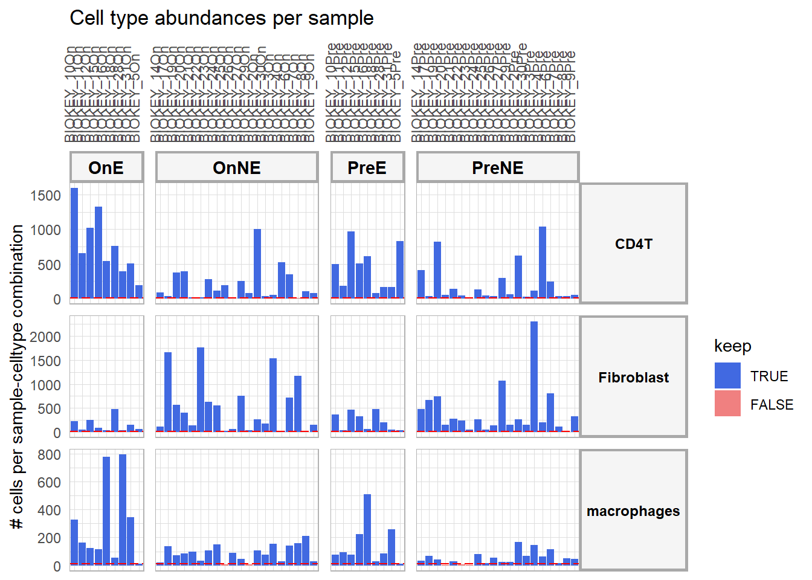
The abund_plot_group shows the differential abundance between conditions/groups. There should not be huge differences in abundances of a cell type between different groups.
abundance_expression_info$abund_plot_group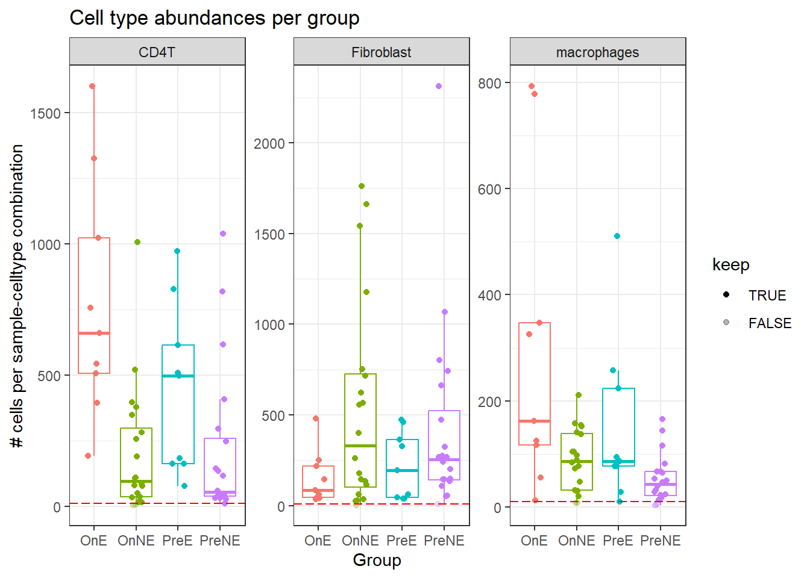
The abund_barplot shows the relative abundances of cell types per sample
abundance_expression_info$abund_barplot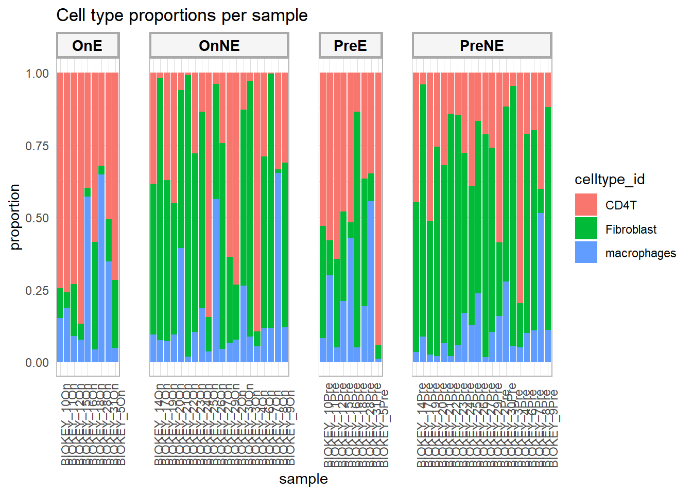
Sender and receiver cell numbers behind the plots. In the case of an all-vs-all analysis both cell numbers are the same.
abundance_expression_info$abundance_data_receiver %>% head()# A tibble: 6 × 5
# Groups: sample, receiver [6]
sample receiver n_cells_receiver group keep_receiver
<chr> <chr> <int> <chr> <dbl>
1 BIOKEY_10On CD4T 1600 OnE 1
2 BIOKEY_10On Fibroblast 220 OnE 1
3 BIOKEY_10On macrophages 326 OnE 1
4 BIOKEY_10Pre CD4T 497 PreE 1
5 BIOKEY_10Pre Fibroblast 365 PreE 1
6 BIOKEY_10Pre macrophages 77 PreE 1abundance_expression_info$abundance_data_sender %>% head()# A tibble: 6 × 5
# Groups: sample, sender [6]
sample sender n_cells_sender group keep_sender
<chr> <chr> <int> <chr> <dbl>
1 BIOKEY_10On CD4T 1600 OnE 1
2 BIOKEY_10On Fibroblast 220 OnE 1
3 BIOKEY_10On macrophages 326 OnE 1
4 BIOKEY_10Pre CD4T 497 PreE 1
5 BIOKEY_10Pre Fibroblast 365 PreE 1
6 BIOKEY_10Pre macrophages 77 PreE 12.3 Expression information
Check the average expression for each gene per sample
Normalized expression value
abundance_expression_info$celltype_info$avg_df %>% head()# A tibble: 6 × 4
gene sample average_sample celltype
<chr> <chr> <dbl> <fct>
1 A1BG BIOKEY_10Pre 0.0972 CD4T
2 A1BG.AS1 BIOKEY_10Pre 0.0351 CD4T
3 A2M BIOKEY_10Pre 0.0195 CD4T
4 A2M.AS1 BIOKEY_10Pre 0.00139 CD4T
5 A4GALT BIOKEY_10Pre 0.00139 CD4T
6 AAAS BIOKEY_10Pre 0.0797 CD4T Fraction of expressing cells with non-zero counts
abundance_expression_info$celltype_info$frq_df %>% head()# A tibble: 6 × 8
gene sample fraction_sample celltype group expressed_sample n_expressed
<chr> <chr> <dbl> <chr> <chr> <lgl> <int>
1 A1BG BIOKEY_1… 0.129 CD4T PreE TRUE 55
2 A1BG.AS1 BIOKEY_1… 0.0483 CD4T PreE TRUE 22
3 A2M BIOKEY_1… 0.0262 CD4T PreE TRUE 14
4 A2M.AS1 BIOKEY_1… 0.00201 CD4T PreE FALSE 3
5 A4GALT BIOKEY_1… 0.00201 CD4T PreE FALSE 0
6 AAAS BIOKEY_1… 0.113 CD4T PreE TRUE 50
# ℹ 1 more variable: expressed_celltype <lgl>logCPM-pseudocounts
abundance_expression_info$celltype_info$pb_df %>% head()# A tibble: 6 × 4
gene sample pb_sample celltype
<chr> <chr> <dbl> <fct>
1 A1BG BIOKEY_10On 4.85 CD4T
2 A1BG.AS1 BIOKEY_10On 3.47 CD4T
3 A2M BIOKEY_10On 2.70 CD4T
4 A2M.AS1 BIOKEY_10On 2.32 CD4T
5 A4GALT BIOKEY_10On 0.374 CD4T
6 AAAS BIOKEY_10On 4.38 CD4T Check the average expression for each gene per group
abundance_expression_info$celltype_info$avg_df_group %>% head()# A tibble: 6 × 4
# Groups: group, celltype [1]
group celltype gene average_group
<chr> <fct> <chr> <dbl>
1 OnE CD4T A1BG 0.0870
2 OnE CD4T A1BG.AS1 0.0179
3 OnE CD4T A2M 0.0130
4 OnE CD4T A2M.AS1 0.00494
5 OnE CD4T A2ML1 0.000390
6 OnE CD4T A2ML1.AS1 0 abundance_expression_info$celltype_info$frq_df_group %>% head()# A tibble: 6 × 4
# Groups: group, celltype [1]
group celltype gene fraction_group
<chr> <chr> <chr> <dbl>
1 OnE CD4T A1BG 0.117
2 OnE CD4T A1BG.AS1 0.0253
3 OnE CD4T A2M 0.0166
4 OnE CD4T A2M.AS1 0.00704
5 OnE CD4T A2ML1 0.000563
6 OnE CD4T A2ML1.AS1 0 abundance_expression_info$celltype_info$pb_df_group %>% head()# A tibble: 6 × 4
# Groups: group, celltype [1]
group celltype gene pb_group
<chr> <fct> <chr> <dbl>
1 OnE CD4T A1BG 5.23
2 OnE CD4T A1BG.AS1 3.03
3 OnE CD4T A2M 2.29
4 OnE CD4T A2M.AS1 1.51
5 OnE CD4T A2ML1 0.153
6 OnE CD4T A2ML1.AS1 0 2.4 Link expression information for ligands of the sender cell types to the corresponding receptors of the receiver cell types
Combine expression information for each ligand-receptor pair gene combination for each sender-receiver cell type combination either sample-based or group-based.
Sample-based
abundance_expression_info$sender_receiver_info$avg_df %>% head()# A tibble: 6 × 8
sample sender receiver ligand receptor avg_ligand avg_receptor
<chr> <fct> <fct> <chr> <chr> <dbl> <dbl>
1 BIOKEY_24Pre macrophages macrophages HLA.DMA CD74 1.97 4.96
2 BIOKEY_7On Fibroblast macrophages MIF CD74 2.26 4.29
3 BIOKEY_27Pre macrophages macrophages HLA.DMA CD74 1.96 4.78
4 BIOKEY_6Pre macrophages macrophages HLA.DMA CD74 1.87 5.00
5 BIOKEY_28On Fibroblast macrophages MIF CD74 2.58 3.56
6 BIOKEY_14Pre macrophages macrophages HLA.DMA CD74 1.82 4.87
# ℹ 1 more variable: ligand_receptor_prod <dbl>abundance_expression_info$sender_receiver_info$frq_df %>% head()# A tibble: 6 × 8
sample sender receiver ligand receptor fraction_ligand fraction_receptor
<chr> <chr> <chr> <chr> <chr> <dbl> <dbl>
1 BIOKEY_23Pre CD4T CD4T CD99 CD99 1 1
2 BIOKEY_23Pre CD4T macroph… CD99 CD99 1 1
3 BIOKEY_26On CD4T macroph… MIF CD74 1 1
4 BIOKEY_21On CD4T CD4T MIF CXCR4 1 1
5 BIOKEY_21On CD4T macroph… MIF CD74 1 1
6 BIOKEY_29On CD4T macroph… HLA.A APLP2 1 1
# ℹ 1 more variable: ligand_receptor_fraction_prod <dbl>abundance_expression_info$sender_receiver_info$pb_df %>% head()# A tibble: 6 × 8
sample sender receiver ligand receptor pb_ligand pb_receptor
<chr> <fct> <fct> <chr> <chr> <dbl> <dbl>
1 BIOKEY_28On macrophages macrophages MIF CD74 12.2 14.3
2 BIOKEY_10On macrophages macrophages HLA.DMA CD74 11.0 15.6
3 BIOKEY_28On Fibroblast macrophages MIF CD74 11.9 14.3
4 BIOKEY_11On macrophages macrophages HLA.DMA CD74 10.8 15.6
5 BIOKEY_7On Fibroblast macrophages MIF CD74 11.5 14.5
6 BIOKEY_31Pre macrophages macrophages MIF CD74 12.0 13.8
# ℹ 1 more variable: ligand_receptor_pb_prod <dbl>Group-based
abundance_expression_info$sender_receiver_info$avg_df_group %>% head()# A tibble: 6 × 8
# Groups: group, sender [6]
group sender receiver ligand receptor avg_ligand_group avg_receptor_group
<chr> <fct> <fct> <chr> <chr> <dbl> <dbl>
1 OnE Fibroblast macroph… MIF CD74 1.49 4.46
2 OnE macrophages macroph… HLA.D… CD74 1.43 4.46
3 PreNE macrophages macroph… HLA.D… CD74 1.45 4.39
4 PreNE Fibroblast macroph… MIF CD74 1.35 4.39
5 OnNE macrophages macroph… HLA.D… CD74 1.34 4.15
6 PreE macrophages macroph… MIF CD74 1.34 4.14
# ℹ 1 more variable: ligand_receptor_prod_group <dbl>abundance_expression_info$sender_receiver_info$frq_df_group %>% head()# A tibble: 6 × 8
# Groups: group, sender [5]
group sender receiver ligand receptor fraction_ligand_group
<chr> <chr> <chr> <chr> <chr> <dbl>
1 OnE Fibroblast macrophages MIF CD74 0.952
2 OnE macrophages macrophages HLA.DRA CD63 0.986
3 OnNE Fibroblast macrophages MIF CD74 0.924
4 PreNE Fibroblast macrophages MIF CD74 0.921
5 OnE macrophages Fibroblast HLA.DRA CD63 0.986
6 PreE Fibroblast macrophages MIF CD74 0.919
# ℹ 2 more variables: fraction_receptor_group <dbl>,
# ligand_receptor_fraction_prod_group <dbl>abundance_expression_info$sender_receiver_info$pb_df_group %>% head()# A tibble: 6 × 8
# Groups: group, sender [5]
group sender receiver ligand receptor pb_ligand_group pb_receptor_group
<chr> <fct> <fct> <chr> <chr> <dbl> <dbl>
1 OnE macrophages macrophag… HLA.D… CD74 10.3 15.0
2 OnE Fibroblast macrophag… MIF CD74 10.1 15.0
3 OnE macrophages macrophag… MIF CD74 9.90 15.0
4 OnE CD4T macrophag… MIF CD74 9.77 15.0
5 PreE macrophages macrophag… MIF CD74 10.0 14.5
6 PreNE Fibroblast macrophag… MIF CD74 9.98 14.4
# ℹ 1 more variable: ligand_receptor_pb_prod_group <dbl>Step3: Genome-wide differential expression analysis of sender and receiver cell types to define DEGs (differentially expressed genes) between the conditions of interest; define logFC/p-value of ligands in senders and receptors in receiver, and define the set of affected target genes in the receiver
Multi-group, multi-sample differential expression (DE) analysis also called differential state analysis in Muscat. Use get_DE_info function to perform DE analysis via Muscat - pseudobulking approach and visualize p-values distribution. First, define comparisons/contrasts of interest.
3.1 Define contrasts and covariates of interest for the DE analysis
Want to compare how cell-cell communication changes On-vs-Pre therapy are different between responder/expander patients vs non-responder/non-expander patients. Want to study how both patient groups (E and NE) react differently to therapy (on-vs-pre).
If wanting to compare group A vs B: ‘contrasts_oi = c(“‘A-B’”)’
If wanting to compare group A vs B & B vs A: ‘contrasts_oi = c(“‘A-B’,‘B-A’”)’
contrasts_oi = c("'(OnE-PreE)-(OnNE-PreNE)','(OnNE-PreNE)-(OnE-PreE)'")contrast_tbl = tibble(contrast =
c("(OnE-PreE)-(OnNE-PreNE)", "(OnNE-PreNE)-(OnE-PreE)"),
group = c("OnE","OnNE"))
contrast_tbl# A tibble: 2 × 2
contrast group
<chr> <chr>
1 (OnE-PreE)-(OnNE-PreNE) OnE
2 (OnNE-PreNE)-(OnE-PreE) OnNE 3.2 DE analysis for each cell type
DE_info = get_DE_info(sce=sce,
sample_id = sample_id,
group_id = group_id,
celltype_id = celltype_id,
batches = batches,
covariates = covariates,
contrasts_oi = contrasts_oi,
min_cells = min_cells)[1] "DE analysis is done:"
[1] "included cell types are:"
[1] "CD4T" "Fibroblast" "macrophages"3.3 DE statistics check: logFC and p-values
# DE_info LogFC and p-values for each gene-celltype-contrast
DE_info$celltype_de$de_output_tidy %>% arrange(p_val) %>% head()# A tibble: 6 × 9
gene cluster_id logFC logCPM F p_val p_adj.loc p_adj contrast
<chr> <chr> <dbl> <dbl> <dbl> <dbl> <dbl> <dbl> <chr>
1 IGKV1.5 macrophages 7.64 5.5 25.7 0.0000046 0.0334 0.0334 (OnE-PreE)…
2 IGKV1.5 macrophages -7.64 5.5 25.7 0.0000046 0.0334 0.0334 (OnNE-PreN…
3 IGHV4.39 CD4T 5.17 4.17 14.8 0.000287 1 1 (OnE-PreE)…
4 IGHV4.39 CD4T -5.17 4.17 14.8 0.000287 1 1 (OnNE-PreN…
5 IGLV3.1 Fibroblast -6.93 8.81 14 0.000428 1 1 (OnE-PreE)…
6 IGLV3.1 Fibroblast 6.93 8.81 14 0.000428 1 1 (OnNE-PreN…Distributions of DE analysis p-values - to be trustworthy p-value distributions should be uniform distributions, with a peak allowed between 0 and 0.05 if there would be a clear biological effect in the data.
DE_info$hist_pvals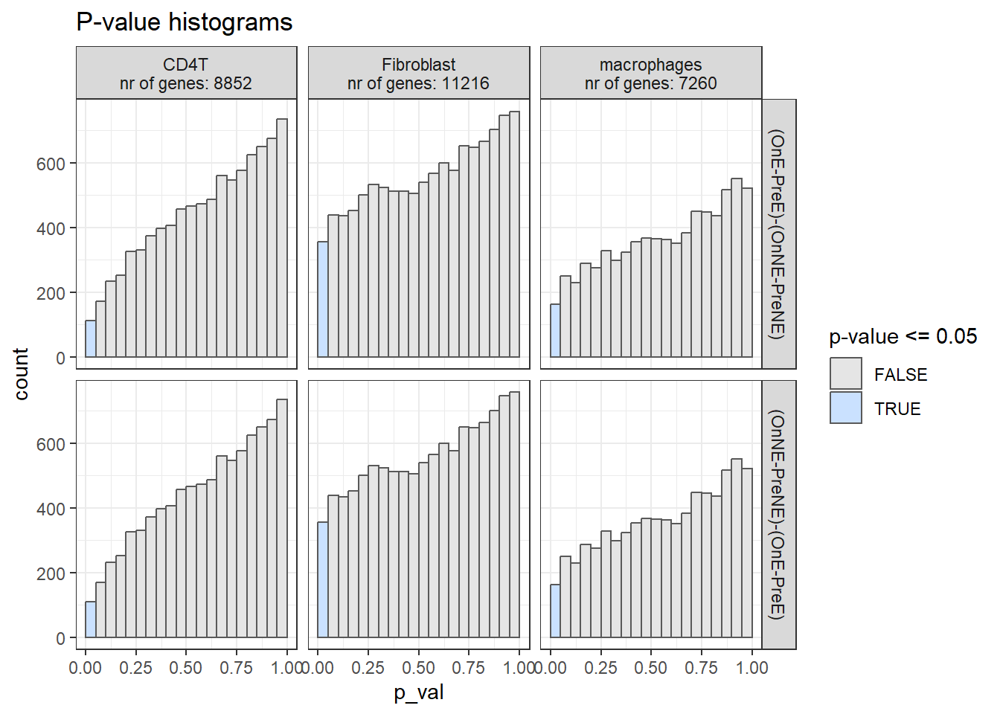
Correct for suboptimal p-value distribution using empirical Null procedure which define empirical p-values based on the observed distribution of the test statistic (here: logFC) and not based on the theoretical distribution.
empirical_pval = TRUE
if(empirical_pval == TRUE){
DE_info_emp = get_empirical_pvals(DE_info$celltype_de$de_output_tidy)
}Corrected, empirical logFC and p-values for each gene-celltype-constrast
DE_info_emp$de_output_tidy_emp %>% arrange(p_emp) %>% head()# A tibble: 6 × 11
gene cluster_id logFC logCPM F p_val p_adj.loc p_adj contrast p_emp
<chr> <chr> <dbl> <dbl> <dbl> <dbl> <dbl> <dbl> <chr> <dbl>
1 IGKV… macrophag… -7.64 5.5 25.7 4.6 e-6 0.0334 0.0334 (OnNE-P… 8.17e-11
2 IGKV… macrophag… 7.64 5.5 25.7 4.6 e-6 0.0334 0.0334 (OnE-Pr… 8.17e-11
3 IGHV… CD4T -5.17 4.17 14.8 2.87e-4 1 1 (OnNE-P… 1.52e- 8
4 IGHV… CD4T 5.17 4.17 14.8 2.87e-4 1 1 (OnE-Pr… 1.52e- 8
5 CCL4… CD4T 3.65 6.22 12 1 e-3 1 1 (OnNE-P… 2.96e- 7
6 CCL4… CD4T -3.65 6.22 12 1 e-3 1 1 (OnE-Pr… 2.96e- 7
# ℹ 1 more variable: p_adj_emp <dbl>Distributions of corrected, empirical p-values:
DE_info_emp$hist_pvals_emp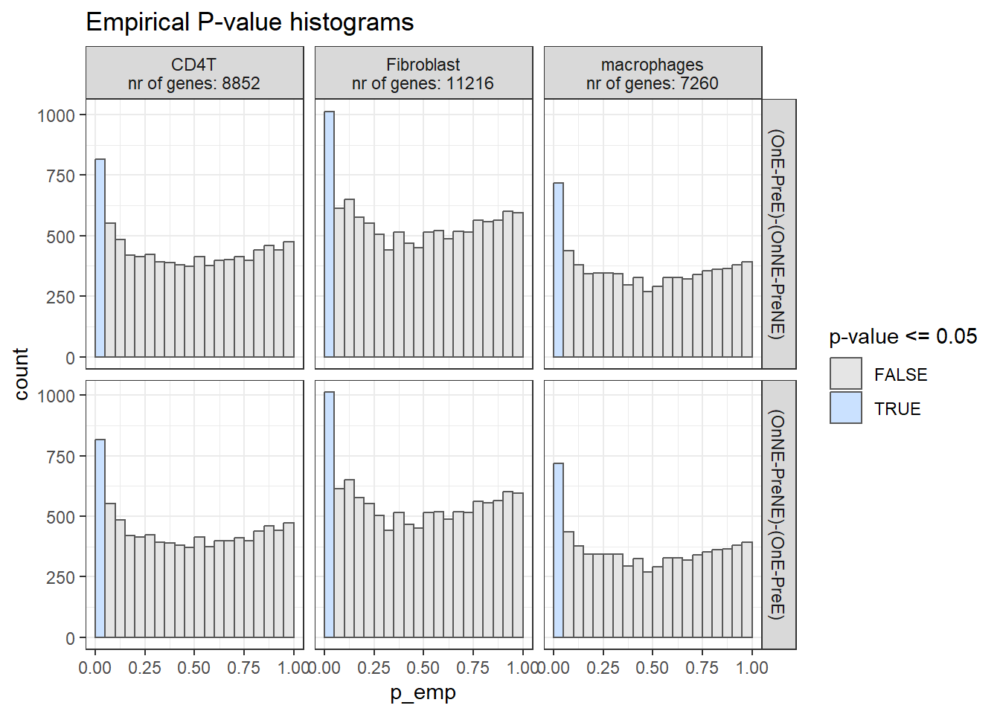
Check the empirical distributions of z-scores - the green density curves should fit well with the histogram, otherwise there might be some issues with the DE model definition.
DE_info_emp$z_distr_plots_emp_pval$`CD4T.(OnE-PreE)-(OnNE-PreNE)`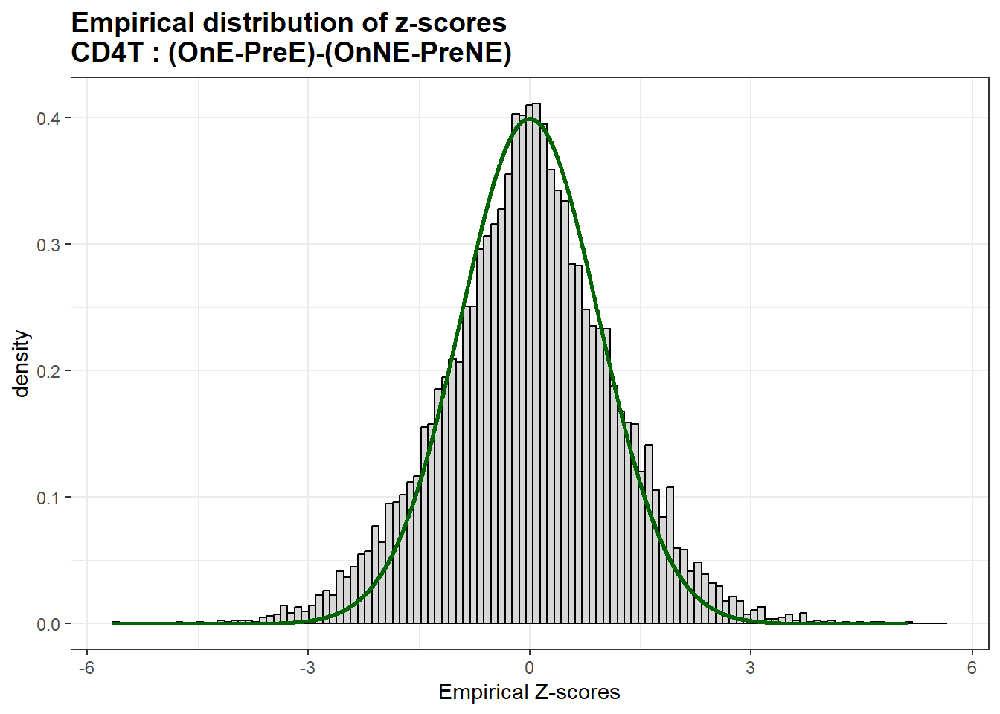
$`CD4T.(OnNE-PreNE)-(OnE-PreE)`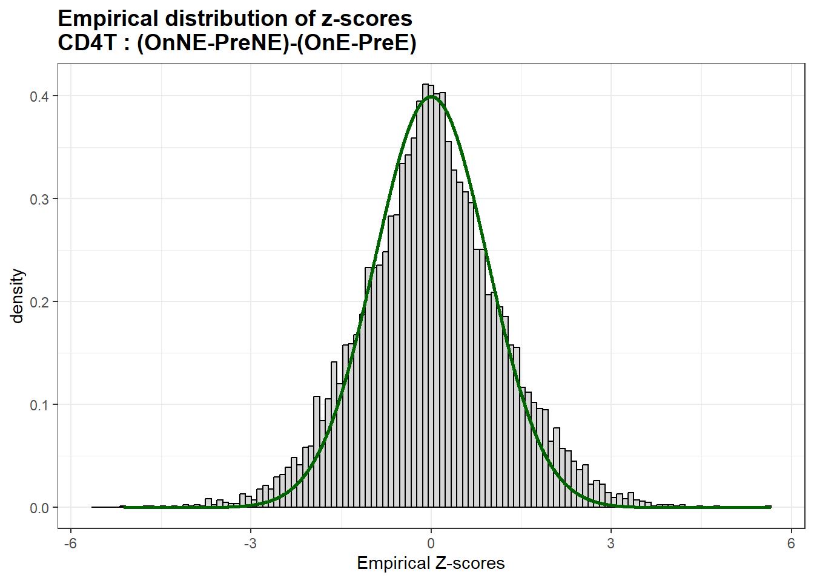
$`Fibroblast.(OnE-PreE)-(OnNE-PreNE)`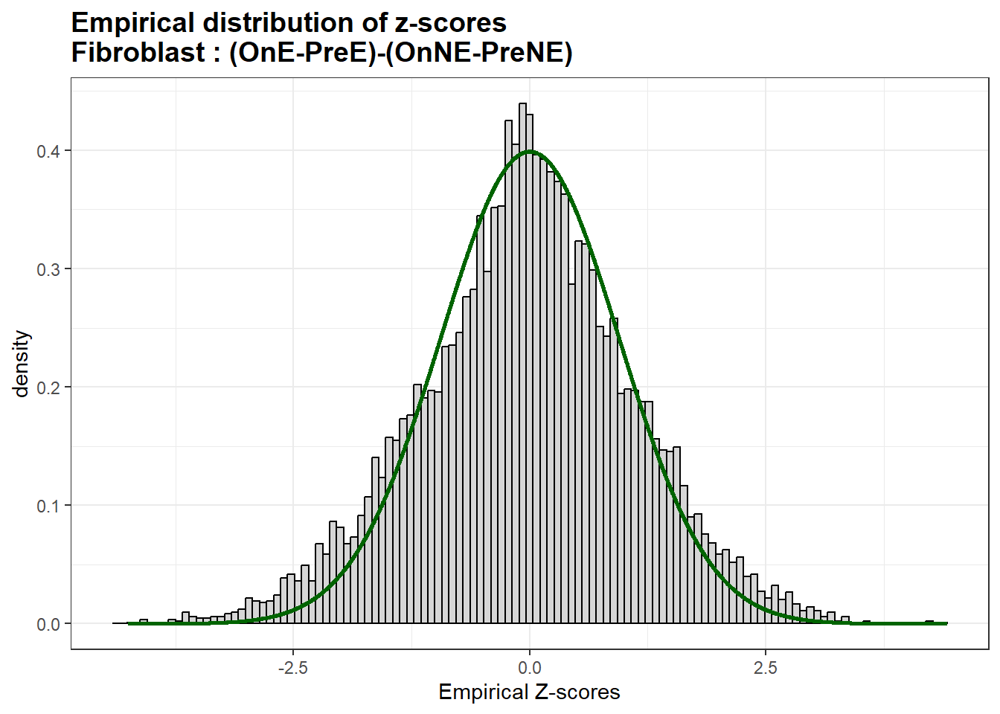
$`Fibroblast.(OnNE-PreNE)-(OnE-PreE)`
$`macrophages.(OnE-PreE)-(OnNE-PreNE)`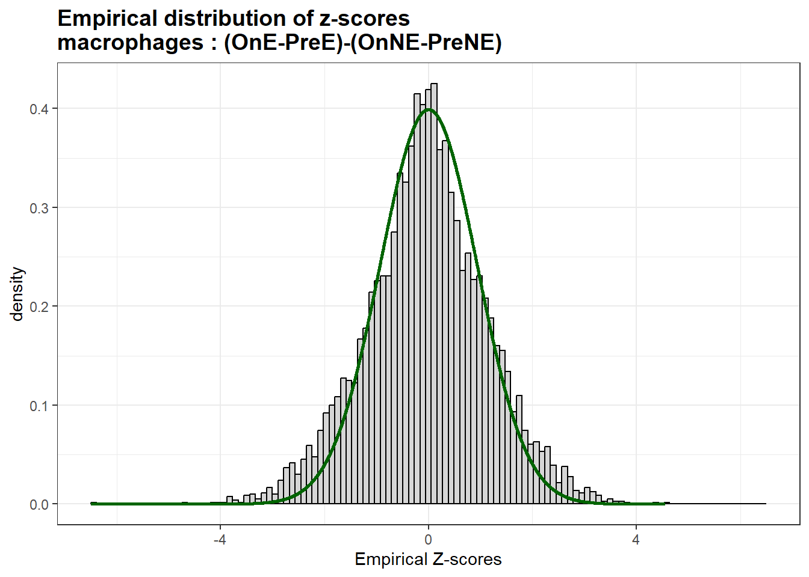
$`macrophages.(OnNE-PreNE)-(OnE-PreE)`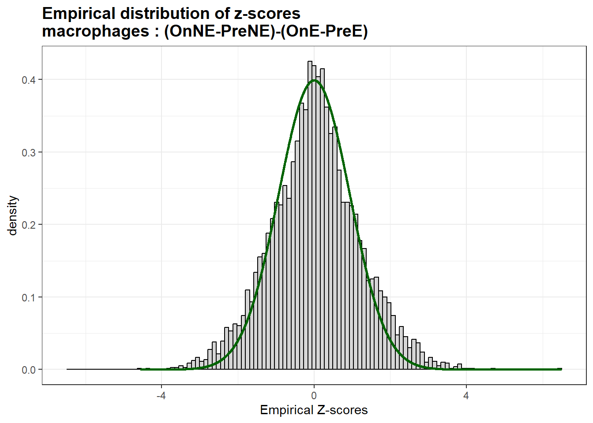
Continue DE analysis with the estimated, empirical p-values
empirical_pval = TRUE
if (empirical_pval ==FALSE) {
celltype_de = DE_info$celltype_de$de_output_tidy
} else {
celltype_de = DE_info_emp$de_output_tidy_emp %>%
dplyr::select(-p_val, -p_adj) %>%
dplyr::rename(p_val = p_emp, p_adj = p_adj_emp)
}celltype_de %>% head()# A tibble: 6 × 9
gene cluster_id logFC logCPM F p_adj.loc contrast p_val p_adj
<chr> <chr> <dbl> <dbl> <dbl> <dbl> <chr> <dbl> <dbl>
1 A1BG CD4T -0.192 5.59 0.549 1 (OnE-PreE)-(… 0.253 0.827
2 A1BG.AS1 CD4T -0.695 3.18 3.09 1 (OnE-PreE)-(… 0.0292 0.451
3 A2M CD4T 0.621 3.17 0.602 1 (OnE-PreE)-(… 0.228 0.803
4 AAAS CD4T -0.107 4.35 0.131 1 (OnE-PreE)-(… 0.578 0.970
5 PRXL2C CD4T -0.967 3.46 2.63 1 (OnE-PreE)-(… 0.0129 0.343
6 AAGAB CD4T -0.0602 5.01 0.0685 1 (OnE-PreE)-(… 0.687 0.9923.4 Combine DE information for ligand-senders and receptor-receivers
Combine Muscat differential expression output for senders and receivers celltypes by linking gene ligands in the sender celltypes to their cognate gene receptors in the receiver celltypes based on the prior knowledge ligand-receptor network.
sender_receiver_de = combine_sender_receiver_de(
sender_de = celltype_de,
receiver_de = celltype_de,
senders_oi = senders_oi,
receivers_oi = receivers_oi,
lr_network = lr_network
)sender_receiver_de %>% head(20)# A tibble: 20 × 12
contrast sender receiver ligand receptor lfc_ligand lfc_receptor
<chr> <chr> <chr> <chr> <chr> <dbl> <dbl>
1 (OnNE-PreNE)-(OnE-Pr… macro… CD4T CCL17 CCR4 5.62 0.339
2 (OnNE-PreNE)-(OnE-Pr… Fibro… CD4T PIP NPTN 4.4 0.329
3 (OnNE-PreNE)-(OnE-Pr… macro… Fibrobl… CXCL13 ACKR4 4.04 0.529
4 (OnNE-PreNE)-(OnE-Pr… Fibro… macroph… PIP NPTN 4.4 0.162
5 (OnNE-PreNE)-(OnE-Pr… Fibro… Fibrobl… PIP NPTN 4.4 0.125
6 (OnNE-PreNE)-(OnE-Pr… macro… CD4T CXCL13 CXCR5 4.04 0.461
7 (OnNE-PreNE)-(OnE-Pr… Fibro… Fibrobl… PIP CD4 4.4 0.0816
8 (OnNE-PreNE)-(OnE-Pr… Fibro… CD4T PIP CD4 4.4 -0.0236
9 (OnNE-PreNE)-(OnE-Pr… macro… Fibrobl… CXCL13 CCR10 4.04 0.245
10 (OnNE-PreNE)-(OnE-Pr… CD4T CD4T CCL4L2 CCR1 3.65 0.494
11 (OnNE-PreNE)-(OnE-Pr… Fibro… macroph… PIP CD4 4.4 -0.328
12 (OnE-PreE)-(OnNE-Pre… CD4T Fibrobl… CXCL14 CXCR4 2.65 1.28
13 (OnE-PreE)-(OnNE-Pre… Fibro… Fibrobl… CDH2 CDH2 1.96 1.96
14 (OnNE-PreNE)-(OnE-Pr… macro… CD4T CXCL13 CXCR3 4.04 -0.142
15 (OnNE-PreNE)-(OnE-Pr… Fibro… macroph… SAA1 CD36 2.77 1.06
16 (OnNE-PreNE)-(OnE-Pr… CD4T macroph… CCL4L2 CCR5 3.65 0.119
17 (OnE-PreE)-(OnNE-Pre… Fibro… Fibrobl… HLA.D… CD37 1.7 2.02
18 (OnE-PreE)-(OnNE-Pre… Fibro… Fibrobl… AREG MMP9 2.67 1.02
19 (OnE-PreE)-(OnNE-Pre… Fibro… Fibrobl… PENK OGFR 3.05 0.469
20 (OnE-PreE)-(OnNE-Pre… Fibro… Fibrobl… MMP7 SDC1 3.2 0.312
# ℹ 5 more variables: ligand_receptor_lfc_avg <dbl>, p_val_ligand <dbl>,
# p_adj_ligand <dbl>, p_val_receptor <dbl>, p_adj_receptor <dbl>Step 4: NicheNet prediction of ligand activities and ligand-target links inference based on DE results
4.1 Define parameters for NicheNet ligand activity analysis
NicheNet ligand activity is calculated via get_ligand_activities_targets_DEgenes function as the enrichment of predicted target genes of ligands in the set of DE genes compared to the genomic background. The function requires a number of parameters to be define the gene set of interest for NicheNet ligand activity.
4.1.1 Define the thresholds that will be used to consider genes as differentially expressed or not (logFC, p-value, minimum fraction of cells that should express a gene in at least one sample in a group).
logFC_threshold = 0.50
p_val_threshold = 0.05
fraction_cutoff = 0.054.1.2 Decide whether to use adjusted or normal p-values
Apply the p-value cutoff on the normal p-values, and not on the p-values corrected for multiple testing because the dataset has only a few samples per group and might lack of statistical power due to pseudobulking. In case of more samples per group, and a sufficient high number of DE genes per group-celltype (> 20-50), use adjusted p-values instead.
p_val_adj = FALSE4.1.3 Select top n of the predicted target genes per ligand to consider for NicheNet ligand-target inference
top_n_target = 2504.1.4 Set the number of cores to run NicheNet ligand activity analysis in parallel for each receiver celltype, if there are many receiver celltypes
verbose = TRUE
cores_system = 8
n.cores = min(cores_system, sender_receiver_de$receiver %>% unique() %>% length())
n.cores[1] 34.2 Run NicheNet ligand activity analysis
Use get_ligand_activities_targets_DEgenes function to predict NicheNet ligand activities and ligand-target links for the receiver cell types.
ligand_activities_targets_DEgenes = suppressMessages(suppressWarnings(
get_ligand_activities_targets_DEgenes(
receiver_de = celltype_de, # DE analysis output for receiver cell types
receivers_oi = receivers_oi, # names of the receiver cell types of interest
ligand_target_matrix = ligand_target_matrix, # prior knowlegde model of ligand-target regulatory potential
logFC_threshold = logFC_threshold, # minimum logFC a gene should have to belong to the gene set of interest for NicheNet ligand activity
p_val_threshold = p_val_threshold, # maximim p_value a gene should have
p_val_adj = p_val_adj, # should the p-value corrected for multiple testing should be used for defining the gene set of interest
top_n_target = top_n_target, # which top n predicted target genes
verbose = verbose,
n.cores = n.cores
)))4.2.1 DE genes used for the activity analysis
dim(ligand_activities_targets_DEgenes$de_genes_df)[1] 3428 6ligand_activities_targets_DEgenes$de_genes_df %>% head(20)# A tibble: 20 × 6
gene receiver logFC p_val p_adj contrast
<chr> <chr> <dbl> <dbl> <dbl> <chr>
1 AC007388.1 CD4T 0.507 0.0471 0.532 (OnE-PreE)-(OnNE-PreNE)
2 AC008124.1 CD4T 0.541 0.00911 0.313 (OnE-PreE)-(OnNE-PreNE)
3 AC084033.3 CD4T 0.544 0.0116 0.334 (OnE-PreE)-(OnNE-PreNE)
4 AC245014.3 CD4T 0.682 0.0228 0.412 (OnE-PreE)-(OnNE-PreNE)
5 ACOT4 CD4T 0.95 0.00502 0.253 (OnE-PreE)-(OnNE-PreNE)
6 ACOX3 CD4T 0.58 0.0266 0.436 (OnE-PreE)-(OnNE-PreNE)
7 AGPAT5 CD4T 0.628 0.00230 0.182 (OnE-PreE)-(OnNE-PreNE)
8 AL133415.1 CD4T 0.691 0.0320 0.467 (OnE-PreE)-(OnNE-PreNE)
9 ALG11 CD4T 0.711 0.00696 0.282 (OnE-PreE)-(OnNE-PreNE)
10 ANTXR2 CD4T 0.587 0.00123 0.136 (OnE-PreE)-(OnNE-PreNE)
11 AP4E1 CD4T 0.7 0.00600 0.268 (OnE-PreE)-(OnNE-PreNE)
12 AP4M1 CD4T 0.519 0.0320 0.467 (OnE-PreE)-(OnNE-PreNE)
13 APOBR CD4T 0.889 0.000768 0.113 (OnE-PreE)-(OnNE-PreNE)
14 APOC1 CD4T 0.908 0.0198 0.399 (OnE-PreE)-(OnNE-PreNE)
15 APOE CD4T 1.07 0.00255 0.189 (OnE-PreE)-(OnNE-PreNE)
16 ARL5B CD4T 0.754 0.00151 0.156 (OnE-PreE)-(OnNE-PreNE)
17 ARSG CD4T 0.549 0.0180 0.387 (OnE-PreE)-(OnNE-PreNE)
18 ATN1 CD4T 0.544 0.0192 0.394 (OnE-PreE)-(OnNE-PreNE)
19 AUH CD4T 0.528 0.00297 0.210 (OnE-PreE)-(OnNE-PreNE)
20 BCS1L CD4T 0.629 0.0245 0.425 (OnE-PreE)-(OnNE-PreNE)4.2.2 Ligand activities and ligand-target links analysis output
dim(ligand_activities_targets_DEgenes$ligand_activities)[1] 202804 8ligand_activities_targets_DEgenes$ligand_activities %>% head(20)# A tibble: 20 × 8
# Groups: receiver, contrast [1]
ligand activity contrast target ligand_target_weight receiver
<chr> <dbl> <chr> <chr> <dbl> <chr>
1 A2M -0.00263 (OnE-PreE)-(OnNE-PreNE) CD70 0.00689 CD4T
2 A2M -0.00263 (OnE-PreE)-(OnNE-PreNE) CEBPD 0.00752 CD4T
3 A2M -0.00263 (OnE-PreE)-(OnNE-PreNE) IL2RA 0.00743 CD4T
4 A2M -0.00263 (OnE-PreE)-(OnNE-PreNE) SHC1 0.00671 CD4T
5 A2M -0.00263 (OnE-PreE)-(OnNE-PreNE) SLC1A5 0.00710 CD4T
6 A2M -0.00263 (OnE-PreE)-(OnNE-PreNE) SLC2A1 0.00739 CD4T
7 A2M -0.00263 (OnE-PreE)-(OnNE-PreNE) THBS1 0.0104 CD4T
8 AANAT -0.00248 (OnE-PreE)-(OnNE-PreNE) CEBPD 0.00408 CD4T
9 AANAT -0.00248 (OnE-PreE)-(OnNE-PreNE) IL2RA 0.00425 CD4T
10 AANAT -0.00248 (OnE-PreE)-(OnNE-PreNE) NBPF1 0.00445 CD4T
11 AANAT -0.00248 (OnE-PreE)-(OnNE-PreNE) SHC1 0.00405 CD4T
12 AANAT -0.00248 (OnE-PreE)-(OnNE-PreNE) SLC1A5 0.00416 CD4T
13 AANAT -0.00248 (OnE-PreE)-(OnNE-PreNE) SLC2A1 0.00481 CD4T
14 AANAT -0.00248 (OnE-PreE)-(OnNE-PreNE) THBS1 0.00599 CD4T
15 ABCA1 -0.00202 (OnE-PreE)-(OnNE-PreNE) ACOX3 0.0447 CD4T
16 ABCA1 -0.00202 (OnE-PreE)-(OnNE-PreNE) EIF4EN… 0.0436 CD4T
17 ABCA1 -0.00202 (OnE-PreE)-(OnNE-PreNE) HLA.DRA 0.0464 CD4T
18 ABCA1 -0.00202 (OnE-PreE)-(OnNE-PreNE) TSTD2 0.0432 CD4T
19 ABCA1 -0.00202 (OnE-PreE)-(OnNE-PreNE) VKORC1 0.0438 CD4T
20 ABCA1 -0.00202 (OnE-PreE)-(OnNE-PreNE) ZNF235 0.0425 CD4T
# ℹ 2 more variables: direction_regulation <fct>, activity_scaled <dbl>Step 5: Prioritization of all sender-ligand - receiver-receptor pairs
MultiNicheNet prioritizes ligands according to their activity (i.e., how well they predict observed changes in gene expression in the receiver cell) and looks for affected targets with high potential to be regulated by these prioritized ligands.
generate_prioritization_tables function performs the MultiNicheNet prioritization of cell-cell interactions using the previously calculated pseudobulk expression, differential expression and NicheNet activity information along with a set of user-defined prioritization weights and grouping tables.
5.1 Define prioritization weights
The user can define the prioritizing weights (importance) of each of the following criteria to prioritize ligand-receptor interactions:
differential expression of ligand and receptor - indicates upregulation of the ligand in a sender cell type and/or upregulation of the receptor in a receiver cell type in the condition of interest compared to other conditions:
de_ligandandde_receptor.cell-type and condition specific expression of ligand in the sender cell type and receptor in the receiver cell type (to mitigate the influence of upregulated but still relatively weakly expressed ligands/receptors):
exprs_ligandandexprs_receptor.high NicheNet ligand activity, to further prioritize ligand-receptor pairs based in their predicted effect of the ligand-receptor interaction on the gene expression in the receiver cell type; indicates active signaling of a ligand in a receiver cell type in the condition of interest compared with other conditions:
activity_scaled.fraction of samples in a group that show high enough expression of a specific senderLigand-receiverReceptor pair (to mitigate the influence of outlier samples):
frac_exprs_ligand_receptor.high relative cell type abundance of sender/receiver in the condition of interest:
abund_senderandabund_receiver.
prioritizing_weights_DE = c("de_ligand" = 1,
"de_receptor" = 1)
prioritizing_weights_activity = c("activity_scaled" = 2)
prioritizing_weights_expression_specificity = c("exprs_ligand" = 2,
"exprs_receptor" = 2)
prioritizing_weights_expression_sufficiency = c("frac_exprs_ligand_receptor" = 1)
prioritizing_weights_relative_abundance = c( "abund_sender" = 0,
"abund_receiver" = 0)
prioritizing_weights = c(prioritizing_weights_DE,
prioritizing_weights_activity,
prioritizing_weights_expression_specificity,
prioritizing_weights_expression_sufficiency,
prioritizing_weights_relative_abundance)5.2 Define grouping data frames
Define dataframe with all sender-receiver cell type combinations, with columns: sender and receiver
sender_receiver_tbl = sender_receiver_de %>% dplyr::distinct(sender, receiver)
sender_receiver_tbl# A tibble: 9 × 2
sender receiver
<chr> <chr>
1 macrophages CD4T
2 Fibroblast CD4T
3 macrophages Fibroblast
4 Fibroblast macrophages
5 Fibroblast Fibroblast
6 CD4T CD4T
7 CD4T Fibroblast
8 CD4T macrophages
9 macrophages macrophagesDefine dataframe showing the groups of each sample (and batches per sample if applicable, with columns: sample and group, and if applicable all batches of interest.
metadata_combined = SummarizedExperiment::colData(sce) %>% tibble::as.tibble()Warning: `as.tibble()` was deprecated in tibble 2.0.0.
ℹ Please use `as_tibble()` instead.
ℹ The signature and semantics have changed, see `?as_tibble`.metadata_combined %>% head()# A tibble: 6 × 18
Cell orig.ident nCount_RNA nFeature_RNA nCount_SCT nFeature_SCT patient_id
<chr> <fct> <dbl> <int> <dbl> <int> <chr>
1 BIOKEY_… BIOKEY 4798 2115 4084 2115 BIOKEY_10
2 BIOKEY_… BIOKEY 1524 888 3064 902 BIOKEY_10
3 BIOKEY_… BIOKEY 6009 2257 4298 2227 BIOKEY_10
4 BIOKEY_… BIOKEY 24516 4494 4654 1676 BIOKEY_10
5 BIOKEY_… BIOKEY 1274 751 2660 821 BIOKEY_10
6 BIOKEY_… BIOKEY 684 517 2210 714 BIOKEY_10
# ℹ 11 more variables: timepoint <chr>, expansion <chr>, BC_type <chr>,
# cellType <chr>, cohort <chr>, expansion_timepoint <chr>, sample_id <chr>,
# subType <chr>, ident <fct>, ang_response <chr>, cellSubType <chr>if (!is.na(batches)) {
grouping_tbl = metadata_combined[, c(sample_id, group_id, batches)] %>%
tibble::as.tibble() %>%
dplyr::distinct()
colnames(grouping_tbl) = c("sample", "group", batches)
} else {
grouping_tbl = metadata_combined[, c(sample_id, group_id)] %>%
tibble::as.tibble() %>%
dplyr::distinct()
colnames(grouping_tbl) = c("sample", "group")
}
grouping_tbl %>% head()# A tibble: 6 × 2
sample group
<chr> <chr>
1 BIOKEY_10Pre PreE
2 BIOKEY_10On OnE
3 BIOKEY_16Pre PreE
4 BIOKEY_16On OnE
5 BIOKEY_14Pre PreNE
6 BIOKEY_14On OnNE Recall contrasts table for consistency in naming of the group column
contrast_tbl %>% head()# A tibble: 2 × 2
contrast group
<chr> <chr>
1 (OnE-PreE)-(OnNE-PreNE) OnE
2 (OnNE-PreNE)-(OnE-PreE) OnNE 5.3 Run the prioritization
prioritization_tables = suppressMessages(
generate_prioritization_tables(
sender_receiver_info = abundance_expression_info$sender_receiver_info,
sender_receiver_de = sender_receiver_de,
ligand_activities_targets_DEgenes = ligand_activities_targets_DEgenes,
contrast_tbl = contrast_tbl,
sender_receiver_tbl = sender_receiver_tbl,
grouping_tbl = grouping_tbl,
prioritizing_weights = prioritizing_weights,
fraction_cutoff = fraction_cutoff,
abundance_data_receiver = abundance_expression_info$abundance_data_receiver,
abundance_data_sender = abundance_expression_info$abundance_data_sender
)
)Prioritized senderLigand-receiverReceptor interactions
str(prioritization_tables)List of 3
$ group_prioritization_tbl : tibble [23,520 × 59] (S3: tbl_df/tbl/data.frame)
..$ contrast : chr [1:23520] "(OnE-PreE)-(OnNE-PreNE)" "(OnE-PreE)-(OnNE-PreNE)" "(OnE-PreE)-(OnNE-PreNE)" "(OnE-PreE)-(OnNE-PreNE)" ...
..$ group : chr [1:23520] "OnE" "OnE" "OnE" "OnE" ...
..$ sender : chr [1:23520] "macrophages" "macrophages" "Fibroblast" "Fibroblast" ...
..$ receiver : chr [1:23520] "Fibroblast" "Fibroblast" "CD4T" "CD4T" ...
..$ ligand : chr [1:23520] "TNF" "TNF" "TGM2" "TGM2" ...
..$ receptor : chr [1:23520] "LTBR" "LTBR" "ITGA4" "ITGA4" ...
..$ lfc_ligand : num [1:23520] 0.845 0.845 1.41 1.41 0.845 0.845 0.845 0.845 1.61 1.61 ...
..$ lfc_receptor : num [1:23520] 0.181 0.181 0.311 0.311 0.184 0.184 0.285 0.285 0.142 0.142 ...
..$ ligand_receptor_lfc_avg : num [1:23520] 0.513 0.513 0.86 0.86 0.514 ...
..$ p_val_ligand : num [1:23520] 0.0658 0.0658 0.0182 0.0182 0.0658 ...
..$ p_adj_ligand : num [1:23520] 0.547 0.547 0.422 0.422 0.547 ...
..$ p_val_receptor : num [1:23520] 0.2143 0.2143 0.0401 0.0401 0.2598 ...
..$ p_adj_receptor : num [1:23520] 0.794 0.794 0.495 0.495 0.825 ...
..$ activity : num [1:23520] 0.09813 -0.00362 -0.0019 0.01035 0.02971 ...
..$ direction_regulation : Factor w/ 2 levels "up","down": 1 2 1 2 1 2 1 2 1 2 ...
..$ activity_scaled : num [1:23520] 3.302 0.194 0.221 2.477 4.855 ...
..$ lr_interaction : chr [1:23520] "TNF_LTBR" "TNF_LTBR" "TGM2_ITGA4" "TGM2_ITGA4" ...
..$ id : chr [1:23520] "TNF_LTBR_macrophages_Fibroblast" "TNF_LTBR_macrophages_Fibroblast" "TGM2_ITGA4_Fibroblast_CD4T" "TGM2_ITGA4_Fibroblast_CD4T" ...
..$ avg_ligand_group : num [1:23520] 0.245 0.245 0.199 0.199 0.245 ...
..$ avg_receptor_group : num [1:23520] 0.294 0.294 0.303 0.303 0.242 ...
..$ ligand_receptor_prod_group : num [1:23520] 0.072 0.072 0.0604 0.0604 0.0591 ...
..$ fraction_ligand_group : num [1:23520] 0.219 0.219 0.203 0.203 0.219 ...
..$ fraction_receptor_group : num [1:23520] 0.379 0.379 0.345 0.345 0.327 ...
..$ ligand_receptor_fraction_prod_group: num [1:23520] 0.0828 0.0828 0.0701 0.0701 0.0715 ...
..$ rel_abundance_scaled_sender : num [1:23520] 1.001 1.001 0.001 0.001 1.001 ...
.. ..- attr(*, "addend")= Named num -0.0744
.. .. ..- attr(*, "names")= chr "0%"
.. ..- attr(*, "multiplier")= num 3.08
..$ rel_abundance_scaled_receiver : num [1:23520] 0.001 0.001 0.898 0.898 1.001 ...
.. ..- attr(*, "addend")= Named num -0.0744
.. .. ..- attr(*, "names")= chr "0%"
.. ..- attr(*, "multiplier")= num 3.08
..$ sender_receiver_rel_abundance_avg : num [1:23520] 0.501 0.501 0.45 0.45 1.001 ...
.. ..- attr(*, "addend")= Named num -0.0744
.. .. ..- attr(*, "names")= chr "0%"
.. ..- attr(*, "multiplier")= num 3.08
..$ lfc_pval_ligand : num [1:23520] 0.999 0.999 2.454 2.454 0.999 ...
..$ p_val_ligand_adapted : num [1:23520] 1.18 1.18 1.74 1.74 1.18 ...
..$ scaled_lfc_ligand : num [1:23520] 0.926 0.926 0.974 0.974 0.926 ...
..$ scaled_p_val_ligand : num [1:23520] 0.837 0.837 0.926 0.926 0.837 ...
..$ scaled_lfc_pval_ligand : num [1:23520] 0.932 0.932 0.974 0.974 0.932 ...
..$ scaled_p_val_ligand_adapted : num [1:23520] 0.919 0.919 0.963 0.963 0.919 ...
..$ lfc_pval_receptor : num [1:23520] 0.121 0.121 0.434 0.434 0.108 ...
..$ p_val_receptor_adapted : num [1:23520] 0.669 0.669 1.397 1.397 0.585 ...
..$ scaled_lfc_receptor : num [1:23520] 0.691 0.691 0.789 0.789 0.694 ...
..$ scaled_p_val_receptor : num [1:23520] 0.694 0.694 0.885 0.885 0.648 ...
..$ scaled_lfc_pval_receptor : num [1:23520] 0.769 0.769 0.887 0.887 0.76 ...
..$ scaled_p_val_receptor_adapted : num [1:23520] 0.847 0.847 0.943 0.943 0.824 ...
..$ activity_up : num [1:23520] 0.0981 0.0981 -0.0019 -0.0019 0.0297 ...
..$ activity_scaled_up : num [1:23520] 3.302 3.302 0.221 0.221 4.855 ...
..$ scaled_activity_scaled_up : num [1:23520] 1.001 1.001 0.469 0.469 1.001 ...
.. ..- attr(*, "addend")= Named num 2.29
.. .. ..- attr(*, "names")= chr "1%"
.. ..- attr(*, "multiplier")= num 0.186
..$ scaled_activity_up : num [1:23520] 1.001 1.001 0.0491 0.0491 0.5106 ...
.. ..- attr(*, "addend")= Named num 0.0052
.. .. ..- attr(*, "names")= chr "1%"
.. ..- attr(*, "multiplier")= num 14.6
..$ activity_down : num [1:23520] -0.00362 -0.00362 0.01035 0.01035 0.00181 ...
..$ activity_scaled_down : num [1:23520] 0.194 0.194 2.477 2.477 -2.144 ...
..$ scaled_activity_scaled_down : num [1:23520] 0.4639 0.4639 0.8896 0.8896 0.0279 ...
.. ..- attr(*, "addend")= Named num 2.29
.. .. ..- attr(*, "names")= chr "1%"
.. ..- attr(*, "multiplier")= num 0.186
..$ scaled_activity_down : num [1:23520] 0.0241 0.0241 0.2279 0.2279 0.1034 ...
.. ..- attr(*, "addend")= Named num 0.0052
.. .. ..- attr(*, "names")= chr "1%"
.. ..- attr(*, "multiplier")= num 14.6
..$ scaled_avg_exprs_ligand : num [1:23520] 1 1 1 1 1 ...
..$ scaled_avg_frq_ligand : num [1:23520] 1.001 1.001 0.857 0.857 1.001 ...
..$ pb_ligand_group : num [1:23520] 7.32 7.32 6.07 6.07 7.32 ...
..$ scaled_pb_ligand : num [1:23520] 1 1 1 1 1 ...
..$ scaled_avg_exprs_receptor : num [1:23520] 1 1 1 1 0.82 ...
..$ scaled_avg_frq_receptor : num [1:23520] 1.001 1.001 1.001 1.001 0.863 ...
..$ pb_receptor_group : num [1:23520] 6.89 6.89 7.25 7.25 6.76 ...
..$ scaled_pb_receptor : num [1:23520] 1 1 1 1 0.98 ...
..$ fraction_expressing_ligand_receptor: num [1:23520] 1 1 0.889 0.889 1 ...
..$ max_scaled_activity : num [1:23520] 1 1 0.89 0.89 1 ...
.. ..- attr(*, "addend")= Named num 2.29
.. .. ..- attr(*, "names")= chr "1%"
.. ..- attr(*, "multiplier")= num 0.186
..$ prioritization_score : num [1:23520] 0.944 0.944 0.94 0.94 0.939 ...
.. ..- attr(*, "addend")= Named num 2.29
.. .. ..- attr(*, "names")= chr "1%"
.. ..- attr(*, "multiplier")= num 0.186
..$ top_group : chr [1:23520] "OnE" "OnE" "OnE" "OnE" ...
$ sample_prioritization_tbl : tibble [2,309,328 × 26] (S3: tbl_df/tbl/data.frame)
..$ sample : chr [1:2309328] "BIOKEY_24Pre" "BIOKEY_7On" "BIOKEY_27Pre" "BIOKEY_6Pre" ...
..$ sender : chr [1:2309328] "macrophages" "Fibroblast" "macrophages" "macrophages" ...
..$ receiver : chr [1:2309328] "macrophages" "macrophages" "macrophages" "macrophages" ...
..$ ligand : chr [1:2309328] "HLA.DMA" "MIF" "HLA.DMA" "HLA.DMA" ...
..$ receptor : chr [1:2309328] "CD74" "CD74" "CD74" "CD74" ...
..$ avg_ligand : num [1:2309328] 1.97 2.26 1.96 1.87 2.58 ...
..$ avg_receptor : num [1:2309328] 4.96 4.29 4.78 5 3.56 ...
..$ ligand_receptor_prod : num [1:2309328] 9.79 9.68 9.39 9.33 9.18 ...
..$ fraction_ligand : num [1:2309328] 0.976 0.992 0.957 0.966 1 ...
..$ fraction_receptor : num [1:2309328] 1 1 1 1 0.997 ...
..$ ligand_receptor_fraction_prod: num [1:2309328] 0.976 0.992 0.957 0.966 0.997 ...
..$ pb_ligand : num [1:2309328] 10.6 11.5 10.8 10.7 11.9 ...
..$ pb_receptor : num [1:2309328] 15.1 14.5 15 15.4 14.3 ...
..$ ligand_receptor_pb_prod : num [1:2309328] 161 167 161 165 170 ...
..$ group : chr [1:2309328] "PreNE" "OnNE" "PreNE" "PreNE" ...
..$ prioritization_score : num [1:2309328] NA 0.479 NA NA 0.869 ...
.. ..- attr(*, "addend")= Named num 2.29
.. .. ..- attr(*, "names")= chr "1%"
.. ..- attr(*, "multiplier")= num 0.186
..$ lr_interaction : chr [1:2309328] "HLA.DMA_CD74" "MIF_CD74" "HLA.DMA_CD74" "HLA.DMA_CD74" ...
..$ id : chr [1:2309328] "HLA.DMA_CD74_macrophages_macrophages" "MIF_CD74_Fibroblast_macrophages" "HLA.DMA_CD74_macrophages_macrophages" "HLA.DMA_CD74_macrophages_macrophages" ...
..$ scaled_LR_prod : num [1:2309328] 1.91 3.32 1.7 1.68 2.9 ...
..$ scaled_LR_frac : num [1:2309328] 1.064 1.381 0.889 0.972 1.484 ...
..$ scaled_LR_pb_prod : num [1:2309328] 1.1 2.48 1.13 1.35 2.75 ...
..$ n_cells_receiver : num [1:2309328] 82 158 23 116 793 32 17 77 67 29 ...
..$ keep_receiver : num [1:2309328] 1 1 1 1 1 1 1 1 1 1 ...
..$ n_cells_sender : num [1:2309328] 82 1176 23 116 37 ...
..$ keep_sender : num [1:2309328] 1 1 1 1 1 1 1 1 1 1 ...
..$ keep_sender_receiver : Factor w/ 4 levels "Sender & Receiver absent",..: 4 4 4 4 4 4 4 4 4 4 ...
$ ligand_activities_target_de_tbl: gropd_df [202,802 × 11] (S3: grouped_df/tbl_df/tbl/data.frame)
..$ contrast : chr [1:202802] "(OnE-PreE)-(OnNE-PreNE)" "(OnE-PreE)-(OnNE-PreNE)" "(OnE-PreE)-(OnNE-PreNE)" "(OnE-PreE)-(OnNE-PreNE)" ...
..$ receiver : chr [1:202802] "CD4T" "CD4T" "CD4T" "CD4T" ...
..$ ligand : chr [1:202802] "A2M" "A2M" "A2M" "A2M" ...
..$ activity : num [1:202802] -0.00263 -0.00263 -0.00263 -0.00263 -0.00263 ...
..$ activity_scaled : num [1:202802] -0.412 -0.412 -0.412 -0.412 -0.412 ...
..$ target : chr [1:202802] "CD70" "CEBPD" "IL2RA" "SHC1" ...
..$ ligand_target_weight: Named num [1:202802] 0.00689 0.00752 0.00743 0.00671 0.0071 ...
.. ..- attr(*, "names")= chr [1:202802] "CD70" "CEBPD" "IL2RA" "SHC1" ...
..$ logFC : num [1:202802] 0.646 1.08 1.37 0.563 0.563 0.723 1.19 1.08 1.37 0.846 ...
..$ p_val : num [1:202802] 2.11e-02 2.18e-02 8.46e-05 1.20e-03 1.02e-02 ...
..$ p_val_adj : num [1:202802] 0.4101 0.4113 0.0432 0.1358 0.321 ...
..$ direction_regulation: Factor w/ 2 levels "up","down": 1 1 1 1 1 1 1 1 1 1 ...
..- attr(*, "groups")= tibble [6 × 3] (S3: tbl_df/tbl/data.frame)
.. ..$ receiver: chr [1:6] "CD4T" "CD4T" "Fibroblast" "Fibroblast" ...
.. ..$ contrast: chr [1:6] "(OnE-PreE)-(OnNE-PreNE)" "(OnNE-PreNE)-(OnE-PreE)" "(OnE-PreE)-(OnNE-PreNE)" "(OnNE-PreNE)-(OnE-PreE)" ...
.. ..$ .rows : list<int> [1:6]
.. .. ..$ : int [1:23061] 1 2 3 4 5 6 7 8 9 10 ...
.. .. ..$ : int [1:23061] 23062 23063 23064 23065 23066 23067 23068 23069 23070 23071 ...
.. .. ..$ : int [1:45380] 46123 46124 46125 46126 46127 46128 46129 46130 46131 46132 ...
.. .. ..$ : int [1:45380] 91503 91504 91505 91506 91507 91508 91509 91510 91511 91512 ...
.. .. ..$ : int [1:32960] 136883 136884 136885 136886 136887 136888 136889 136890 136891 136892 ...
.. .. ..$ : int [1:32960] 169843 169844 169845 169846 169847 169848 169849 169850 169851 169852 ...
.. .. ..@ ptype: int(0)
.. ..- attr(*, ".drop")= logi TRUE5.3.1 Group-based summary table
Contains expression information of each LR pair per group
prioritization_tables$group_prioritization_tbl %>% head(20)# A tibble: 20 × 59
contrast group sender receiver ligand receptor lfc_ligand lfc_receptor
<chr> <chr> <chr> <chr> <chr> <chr> <dbl> <dbl>
1 (OnE-PreE)-(On… OnE macro… Fibrobl… TNF LTBR 0.845 0.181
2 (OnE-PreE)-(On… OnE macro… Fibrobl… TNF LTBR 0.845 0.181
3 (OnE-PreE)-(On… OnE Fibro… CD4T TGM2 ITGA4 1.41 0.311
4 (OnE-PreE)-(On… OnE Fibro… CD4T TGM2 ITGA4 1.41 0.311
5 (OnE-PreE)-(On… OnE macro… macroph… TNF LTBR 0.845 0.184
6 (OnE-PreE)-(On… OnE macro… macroph… TNF LTBR 0.845 0.184
7 (OnE-PreE)-(On… OnE macro… CD4T TNF TRAF2 0.845 0.285
8 (OnE-PreE)-(On… OnE macro… CD4T TNF TRAF2 0.845 0.285
9 (OnE-PreE)-(On… OnE macro… CD4T CXCL9 CXCR3 1.61 0.142
10 (OnE-PreE)-(On… OnE macro… CD4T CXCL9 CXCR3 1.61 0.142
11 (OnE-PreE)-(On… OnE macro… Fibrobl… TNF TNFRSF1A 0.845 0.0877
12 (OnE-PreE)-(On… OnE macro… Fibrobl… TNF TNFRSF1A 0.845 0.0877
13 (OnE-PreE)-(On… OnE Fibro… CD4T CXCL9 CXCR3 2.01 0.142
14 (OnE-PreE)-(On… OnE Fibro… CD4T CXCL9 CXCR3 2.01 0.142
15 (OnNE-PreNE)-(… OnNE CD4T CD4T PTPRC DPP4 0.146 0.379
16 (OnNE-PreNE)-(… OnNE CD4T CD4T PTPRC DPP4 0.146 0.379
17 (OnE-PreE)-(On… OnE Fibro… macroph… CSF1 CSF3R 0.431 0.695
18 (OnE-PreE)-(On… OnE Fibro… macroph… CSF1 CSF3R 0.431 0.695
19 (OnE-PreE)-(On… OnE macro… CD4T TNF TNFRSF1B 0.845 0.148
20 (OnE-PreE)-(On… OnE macro… CD4T TNF TNFRSF1B 0.845 0.148
# ℹ 51 more variables: ligand_receptor_lfc_avg <dbl>, p_val_ligand <dbl>,
# p_adj_ligand <dbl>, p_val_receptor <dbl>, p_adj_receptor <dbl>,
# activity <dbl>, direction_regulation <fct>, activity_scaled <dbl>,
# lr_interaction <chr>, id <chr>, avg_ligand_group <dbl>,
# avg_receptor_group <dbl>, ligand_receptor_prod_group <dbl>,
# fraction_ligand_group <dbl>, fraction_receptor_group <dbl>,
# ligand_receptor_fraction_prod_group <dbl>, …colnames(prioritization_tables$group_prioritization_tbl) [1] "contrast" "group"
[3] "sender" "receiver"
[5] "ligand" "receptor"
[7] "lfc_ligand" "lfc_receptor"
[9] "ligand_receptor_lfc_avg" "p_val_ligand"
[11] "p_adj_ligand" "p_val_receptor"
[13] "p_adj_receptor" "activity"
[15] "direction_regulation" "activity_scaled"
[17] "lr_interaction" "id"
[19] "avg_ligand_group" "avg_receptor_group"
[21] "ligand_receptor_prod_group" "fraction_ligand_group"
[23] "fraction_receptor_group" "ligand_receptor_fraction_prod_group"
[25] "rel_abundance_scaled_sender" "rel_abundance_scaled_receiver"
[27] "sender_receiver_rel_abundance_avg" "lfc_pval_ligand"
[29] "p_val_ligand_adapted" "scaled_lfc_ligand"
[31] "scaled_p_val_ligand" "scaled_lfc_pval_ligand"
[33] "scaled_p_val_ligand_adapted" "lfc_pval_receptor"
[35] "p_val_receptor_adapted" "scaled_lfc_receptor"
[37] "scaled_p_val_receptor" "scaled_lfc_pval_receptor"
[39] "scaled_p_val_receptor_adapted" "activity_up"
[41] "activity_scaled_up" "scaled_activity_scaled_up"
[43] "scaled_activity_up" "activity_down"
[45] "activity_scaled_down" "scaled_activity_scaled_down"
[47] "scaled_activity_down" "scaled_avg_exprs_ligand"
[49] "scaled_avg_frq_ligand" "pb_ligand_group"
[51] "scaled_pb_ligand" "scaled_avg_exprs_receptor"
[53] "scaled_avg_frq_receptor" "pb_receptor_group"
[55] "scaled_pb_receptor" "fraction_expressing_ligand_receptor"
[57] "max_scaled_activity" "prioritization_score"
[59] "top_group" dim(prioritization_tables$group_prioritization_tbl)[1] 23520 595.3.2 Sample-based summary table
Contains expression information of each LR pair per sample
prioritization_tables$sample_prioritization_tbl %>% head(20)# A tibble: 20 × 26
sample sender receiver ligand receptor avg_ligand avg_receptor
<chr> <chr> <chr> <chr> <chr> <dbl> <dbl>
1 BIOKEY_24Pre macrophages macrophages HLA.DMA CD74 1.97 4.96
2 BIOKEY_7On Fibroblast macrophages MIF CD74 2.26 4.29
3 BIOKEY_27Pre macrophages macrophages HLA.DMA CD74 1.96 4.78
4 BIOKEY_6Pre macrophages macrophages HLA.DMA CD74 1.87 5.00
5 BIOKEY_28On Fibroblast macrophages MIF CD74 2.58 3.56
6 BIOKEY_14Pre macrophages macrophages HLA.DMA CD74 1.82 4.87
7 BIOKEY_7Pre Fibroblast macrophages MIF CD74 2.10 4.22
8 BIOKEY_30On macrophages macrophages HLA.DMA CD74 1.80 4.90
9 BIOKEY_30Pre macrophages macrophages HLA.DMA CD74 1.72 4.90
10 BIOKEY_18Pre macrophages macrophages HLA.DMA CD74 1.71 4.90
11 BIOKEY_20Pre macrophages macrophages HLA.DMA CD74 1.68 4.93
12 BIOKEY_18On macrophages macrophages HLA.DMA CD74 1.67 4.90
13 BIOKEY_31Pre macrophages macrophages MIF CD74 2.41 3.38
14 BIOKEY_5On Fibroblast macrophages MIF CD74 1.86 4.37
15 BIOKEY_10On macrophages macrophages HLA.DMA CD74 1.68 4.74
16 BIOKEY_12On macrophages macrophages HLA.DMA CD74 1.65 4.81
17 BIOKEY_4Pre macrophages macrophages HLA.DMA CD74 1.68 4.66
18 BIOKEY_19Pre macrophages macrophages HLA.DMA CD74 1.63 4.81
19 BIOKEY_28On macrophages macrophages MIF CD74 2.17 3.56
20 BIOKEY_27On macrophages macrophages HLA.DMA CD74 1.77 4.34
# ℹ 19 more variables: ligand_receptor_prod <dbl>, fraction_ligand <dbl>,
# fraction_receptor <dbl>, ligand_receptor_fraction_prod <dbl>,
# pb_ligand <dbl>, pb_receptor <dbl>, ligand_receptor_pb_prod <dbl>,
# group <chr>, prioritization_score <dbl>, lr_interaction <chr>, id <chr>,
# scaled_LR_prod <dbl>, scaled_LR_frac <dbl>, scaled_LR_pb_prod <dbl>,
# n_cells_receiver <dbl>, keep_receiver <dbl>, n_cells_sender <dbl>,
# keep_sender <dbl>, keep_sender_receiver <fct>colnames(prioritization_tables$sample_prioritization_tbl) [1] "sample" "sender"
[3] "receiver" "ligand"
[5] "receptor" "avg_ligand"
[7] "avg_receptor" "ligand_receptor_prod"
[9] "fraction_ligand" "fraction_receptor"
[11] "ligand_receptor_fraction_prod" "pb_ligand"
[13] "pb_receptor" "ligand_receptor_pb_prod"
[15] "group" "prioritization_score"
[17] "lr_interaction" "id"
[19] "scaled_LR_prod" "scaled_LR_frac"
[21] "scaled_LR_pb_prod" "n_cells_receiver"
[23] "keep_receiver" "n_cells_sender"
[25] "keep_sender" "keep_sender_receiver" dim(prioritization_tables$sample_prioritization_tbl)[1] 2309328 265.3.3 Ligand activities and ligand-target links
prioritization_tables$ligand_activities_target_de_tbl %>% head(20)# A tibble: 20 × 11
# Groups: receiver, contrast [1]
contrast receiver ligand activity activity_scaled target ligand_target_weight
<chr> <chr> <chr> <dbl> <dbl> <chr> <dbl>
1 (OnE-Pr… CD4T A2M -0.00263 -0.412 CD70 0.00689
2 (OnE-Pr… CD4T A2M -0.00263 -0.412 CEBPD 0.00752
3 (OnE-Pr… CD4T A2M -0.00263 -0.412 IL2RA 0.00743
4 (OnE-Pr… CD4T A2M -0.00263 -0.412 SHC1 0.00671
5 (OnE-Pr… CD4T A2M -0.00263 -0.412 SLC1A5 0.00710
6 (OnE-Pr… CD4T A2M -0.00263 -0.412 SLC2A1 0.00739
7 (OnE-Pr… CD4T A2M -0.00263 -0.412 THBS1 0.0104
8 (OnE-Pr… CD4T AANAT -0.00248 -0.280 CEBPD 0.00408
9 (OnE-Pr… CD4T AANAT -0.00248 -0.280 IL2RA 0.00425
10 (OnE-Pr… CD4T AANAT -0.00248 -0.280 NBPF1 0.00445
11 (OnE-Pr… CD4T AANAT -0.00248 -0.280 SHC1 0.00405
12 (OnE-Pr… CD4T AANAT -0.00248 -0.280 SLC1A5 0.00416
13 (OnE-Pr… CD4T AANAT -0.00248 -0.280 SLC2A1 0.00481
14 (OnE-Pr… CD4T AANAT -0.00248 -0.280 THBS1 0.00599
15 (OnE-Pr… CD4T ABCA1 -0.00202 0.122 ACOX3 0.0447
16 (OnE-Pr… CD4T ABCA1 -0.00202 0.122 EIF4E… 0.0436
17 (OnE-Pr… CD4T ABCA1 -0.00202 0.122 HLA.D… 0.0464
18 (OnE-Pr… CD4T ABCA1 -0.00202 0.122 TSTD2 0.0432
19 (OnE-Pr… CD4T ABCA1 -0.00202 0.122 VKORC1 0.0438
20 (OnE-Pr… CD4T ABCA1 -0.00202 0.122 ZNF235 0.0425
# ℹ 4 more variables: logFC <dbl>, p_val <dbl>, p_val_adj <dbl>,
# direction_regulation <fct>colnames(prioritization_tables$ligand_activities_target_de_tbl) [1] "contrast" "receiver" "ligand"
[4] "activity" "activity_scaled" "target"
[7] "ligand_target_weight" "logFC" "p_val"
[10] "p_val_adj" "direction_regulation"dim(prioritization_tables$ligand_activities_target_de_tbl)[1] 202802 11Step 6: Correlation between ligand-receptor pairs and their predicted target genes expression
lr_target_prior_cor_inference function calculates the Pearson and Spearman expression correlation between LR pair pseudobulk expression products and DE gene expression product adding the NicheNet ligand-target regulatory potential score as well as prior knowledge support measures for the LR-to-target links.
lr_target_prior_cor = lr_target_prior_cor_inference(
receivers_oi = prioritization_tables$group_prioritization_tbl$receiver %>%
unique(),
abundance_expression_info = abundance_expression_info,
celltype_de = celltype_de,
grouping_tbl = grouping_tbl,
prioritization_tables = prioritization_tables,
ligand_target_matrix = ligand_target_matrix,
logFC_threshold = logFC_threshold,
p_val_threshold = p_val_threshold,
p_val_adj = p_val_adj
)lr_target_prior_cor %>% head(20)# A tibble: 20 × 14
sender receiver ligand receptor id target pearson pearson_pval spearman
<chr> <chr> <chr> <chr> <chr> <chr> <dbl> <dbl> <dbl>
1 Fibrobl… Fibrobl… COL1A1 ITGB1 COL1… AADAT 0.357 0.00688 0.405
2 Fibrobl… Fibrobl… COL1A1 ITGB1 COL1… AARS2 -0.0147 0.914 -0.0276
3 Fibrobl… Fibrobl… COL1A1 ITGB1 COL1… ABCD3 0.0290 0.832 0.0446
4 Fibrobl… Fibrobl… COL1A1 ITGB1 COL1… ABHD1… -0.476 0.000208 -0.455
5 Fibrobl… Fibrobl… COL1A1 ITGB1 COL1… ABHD8 -0.173 0.201 -0.219
6 Fibrobl… Fibrobl… COL1A1 ITGB1 COL1… ACKR3 -0.0344 0.801 -0.0729
7 Fibrobl… Fibrobl… COL1A1 ITGB1 COL1… ACTN1 0.557 0.00000816 0.528
8 Fibrobl… Fibrobl… COL1A1 ITGB1 COL1… ACTR8 0.185 0.173 0.125
9 Fibrobl… Fibrobl… COL1A1 ITGB1 COL1… ADAL 0.0675 0.621 0.0569
10 Fibrobl… Fibrobl… COL1A1 ITGB1 COL1… ADAM33 -0.148 0.275 -0.248
11 Fibrobl… Fibrobl… COL1A1 ITGB1 COL1… ADAMT… 0.141 0.299 -0.0704
12 Fibrobl… Fibrobl… COL1A1 ITGB1 COL1… ADAMT… -0.0260 0.849 -0.0339
13 Fibrobl… Fibrobl… COL1A1 ITGB1 COL1… ADAT1 -0.0861 0.528 -0.0488
14 Fibrobl… Fibrobl… COL1A1 ITGB1 COL1… ADCY6 -0.163 0.231 -0.181
15 Fibrobl… Fibrobl… COL1A1 ITGB1 COL1… ADCYA… -0.273 0.0421 -0.200
16 Fibrobl… Fibrobl… COL1A1 ITGB1 COL1… AGAP1 0.257 0.0563 0.229
17 Fibrobl… Fibrobl… COL1A1 ITGB1 COL1… AGAP6 0.0957 0.483 0.101
18 Fibrobl… Fibrobl… COL1A1 ITGB1 COL1… AGL 0.00374 0.978 -0.103
19 Fibrobl… Fibrobl… COL1A1 ITGB1 COL1… AGTPB… 0.247 0.0660 0.234
20 Fibrobl… Fibrobl… COL1A1 ITGB1 COL1… AGTR1 -0.133 0.330 -0.196
# ℹ 5 more variables: spearman_pval <dbl>, prior_score <dbl>,
# rank_of_target <int>, rank_of_ligand <int>, id_target <chr>Step 7: Save MultiNicheNet cell-cell communication analysis
path = "./"
multinichenet_output = list(
celltype_info = abundance_expression_info$celltype_info,
celltype_de = celltype_de,
sender_receiver_info = abundance_expression_info$sender_receiver_info,
sender_receiver_de = sender_receiver_de,
ligand_activities_targets_DEgenes = ligand_activities_targets_DEgenes,
prioritization_tables = prioritization_tables,
grouping_tbl = grouping_tbl,
lr_target_prior_cor = lr_target_prior_cor
)
multinichenet_output = make_lite_output(multinichenet_output)
save = TRUE
if(save == TRUE){
saveRDS(multinichenet_output, paste0(path, "multinichenet_output.rds"))
}
# multinichenet_output <- readRDS("D:/MultiNicheNet/multinichenet_output.rds")Step 8: Visualization of MultiNicheNet cell-cell communication analysis
8.1 Circos plots of condition-specific top prioritized LR interactions
Top 50 predictions across all contrasts, senders and receivers of interest.
prioritized_tbl_oi_all = get_top_n_lr_pairs(
prioritization_tables = multinichenet_output$prioritization_tables,
top_n = 50,
rank_per_group = FALSE # top n given over all groups
)prioritized_tbl_oi_all %>% head()# A tibble: 6 × 8
group sender receiver ligand receptor id prioritization_score
<chr> <chr> <chr> <chr> <chr> <chr> <dbl>
1 OnE macrophages Fibroblast TNF LTBR TNF_LTBR_m… 0.944
2 OnE Fibroblast CD4T TGM2 ITGA4 TGM2_ITGA4… 0.940
3 OnE macrophages macrophages TNF LTBR TNF_LTBR_m… 0.939
4 OnE macrophages CD4T TNF TRAF2 TNF_TRAF2_… 0.937
5 OnE macrophages CD4T CXCL9 CXCR3 CXCL9_CXCR… 0.933
6 OnE macrophages Fibroblast TNF TNFRSF1A TNF_TNFRSF… 0.923
# ℹ 1 more variable: prioritization_rank <dbl>prioritized_tbl_oi = multinichenet_output$prioritization_tables$group_prioritization_tbl %>%
filter(id %in% prioritized_tbl_oi_all$id) %>%
distinct(id, sender, receiver, ligand, receptor, group) %>%
left_join(prioritized_tbl_oi_all)Joining with `by = join_by(id, sender, receiver, ligand, receptor, group)`prioritized_tbl_oi$prioritization_score[
is.na(prioritized_tbl_oi$prioritization_score)] = 0prioritized_tbl_oi %>% head()# A tibble: 6 × 8
id sender receiver ligand receptor group prioritization_score
<chr> <chr> <chr> <chr> <chr> <chr> <dbl>
1 TNF_LTBR_macrophag… macro… Fibrobl… TNF LTBR OnE 0.944
2 TGM2_ITGA4_Fibrobl… Fibro… CD4T TGM2 ITGA4 OnE 0.940
3 TNF_LTBR_macrophag… macro… macroph… TNF LTBR OnE 0.939
4 TNF_TRAF2_macropha… macro… CD4T TNF TRAF2 OnE 0.937
5 CXCL9_CXCR3_macrop… macro… CD4T CXCL9 CXCR3 OnE 0.933
6 TNF_TNFRSF1A_macro… macro… Fibrobl… TNF TNFRSF1A OnE 0.923
# ℹ 1 more variable: prioritization_rank <dbl>senders_receivers = union(prioritized_tbl_oi$sender %>% unique(),
prioritized_tbl_oi$receiver %>% unique()) %>% sort()
colors_sender = RColorBrewer::brewer.pal(
n = length(senders_receivers), name = 'Spectral'
) %>% magrittr::set_names(senders_receivers)
colors_receiver = RColorBrewer::brewer.pal(
n = length(senders_receivers), name = 'Spectral'
) %>% magrittr::set_names(senders_receivers)senders_receivers [1] "CD4T" "Fibroblast" "macrophages"colors_sender CD4T Fibroblast macrophages
"#FC8D59" "#FFFFBF" "#99D594" make_circos_group_comparison makes a circos plot with top prioritized ligand-receptor interaction for each group of interest. In each circos, all possible LR pairs are shown, but arrows are only drawn between the ones belonging to the group of interest.
circos_list = make_circos_group_comparison(
prioritized_tbl_oi, colors_sender, colors_receiver
) Joining with `by = join_by(sender)`
Joining with `by = join_by(receiver)`
Joining with `by = join_by(sender)`
Joining with `by = join_by(receiver)`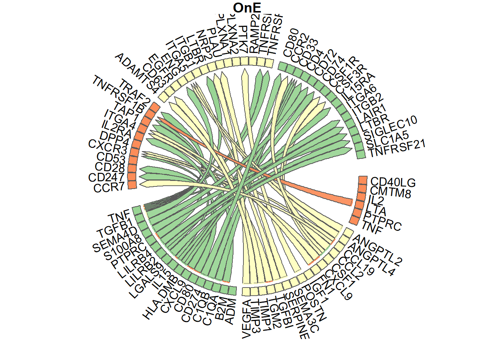
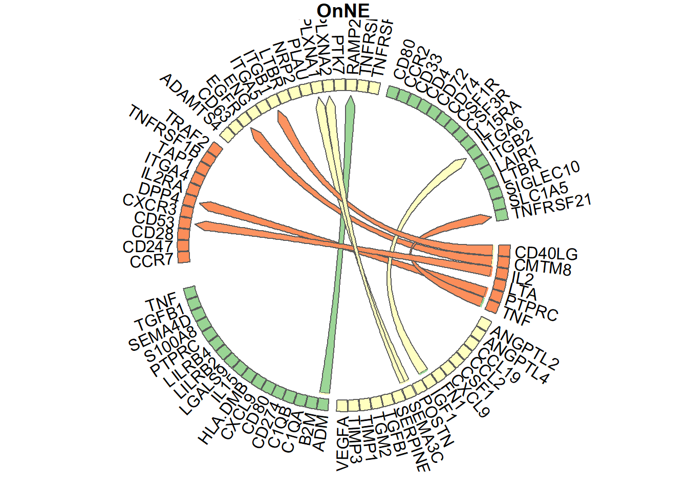
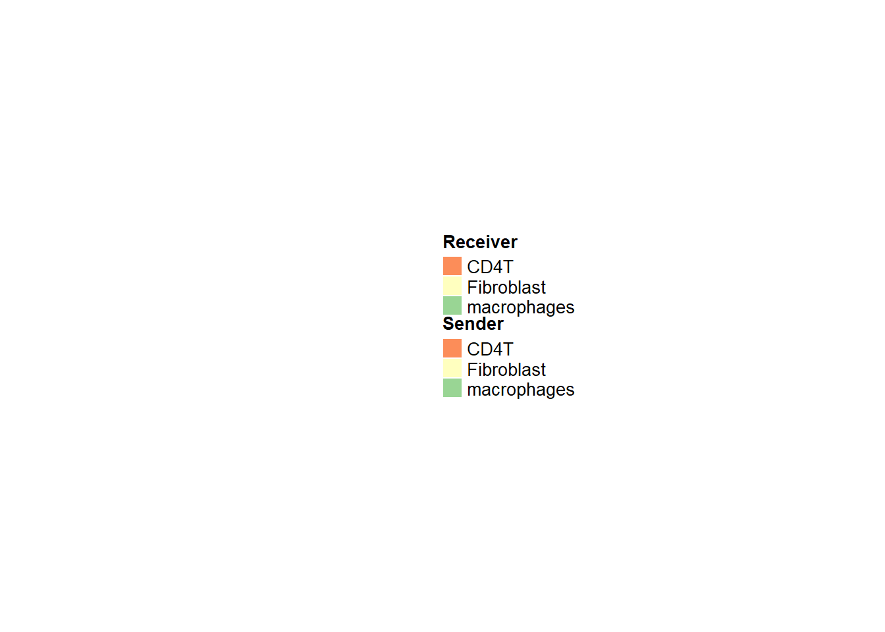
make_circos_one_group makes full circos plots for one group of interest for top n LR pairs per group.
prioritized_tbl_oi_E_30 = get_top_n_lr_pairs( multinichenet_output$prioritization_tables, 30, groups_oi = "OnE")
prioritized_tbl_oi_NE_30 = get_top_n_lr_pairs( multinichenet_output$prioritization_tables, 30, groups_oi = "OnNE")circos_E = make_circos_one_group(
prioritized_tbl_oi_E_30, colors_sender, colors_receiver)Joining with `by = join_by(sender)`
Joining with `by = join_by(receiver)`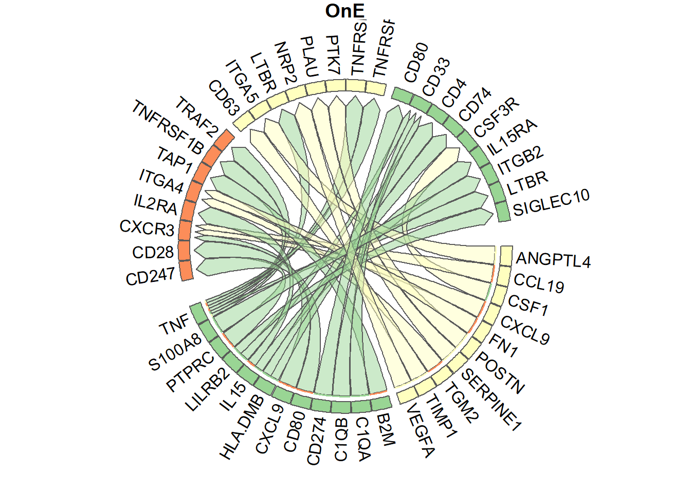
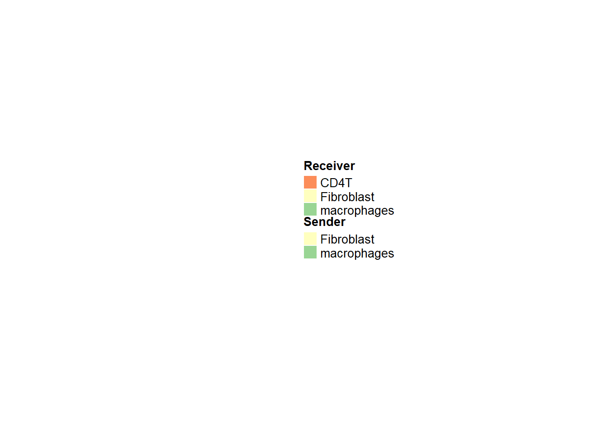
circos_NE = make_circos_one_group(
prioritized_tbl_oi_NE_30, colors_sender, colors_receiver)Joining with `by = join_by(sender)`
Joining with `by = join_by(receiver)`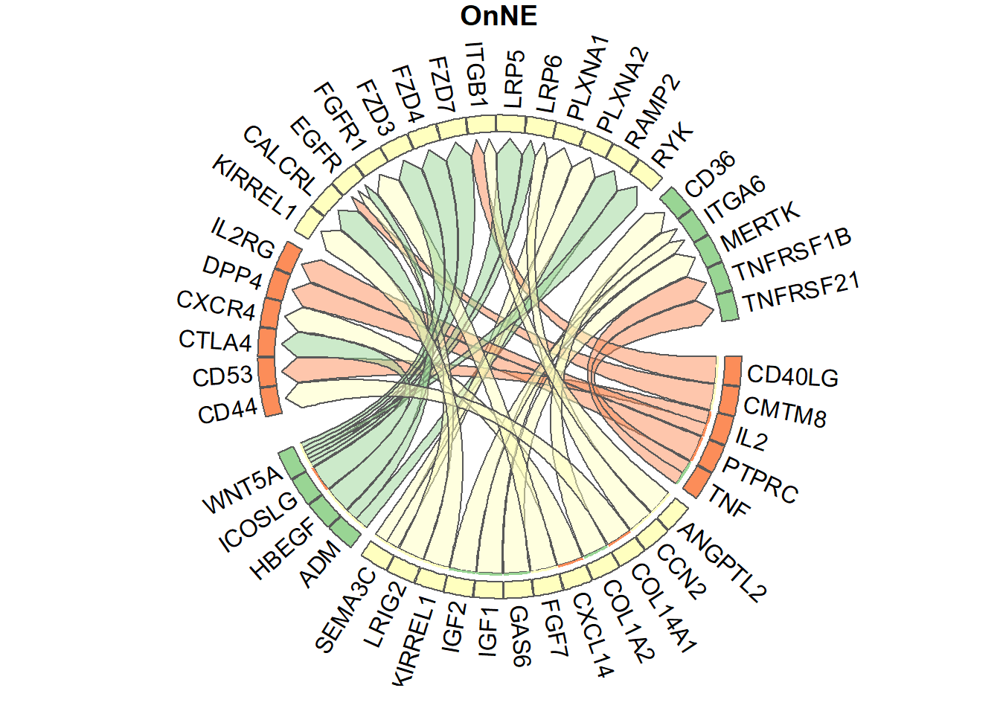
8.2 Dotplot/Heatmap visualization of scaled ligand-receptor pseudobulk expression product per sample and ligand activity
make_sample_lr_prod_activity_plots used to visualize the scaled product of Ligand-Receptor (pseudobulk) expression per sample, and compare the different groups. In addition, shows the NicheNet ligand activities in each receiver-celltype combination.
Dotplot/heatmap of top 30 interactions of which the On-vs-Pre change is stronger in group E than the NE group
plot_oi = make_sample_lr_prod_activity_plots(
multinichenet_output$prioritization_tables,
prioritized_tbl_oi_E_30)
plot_oi 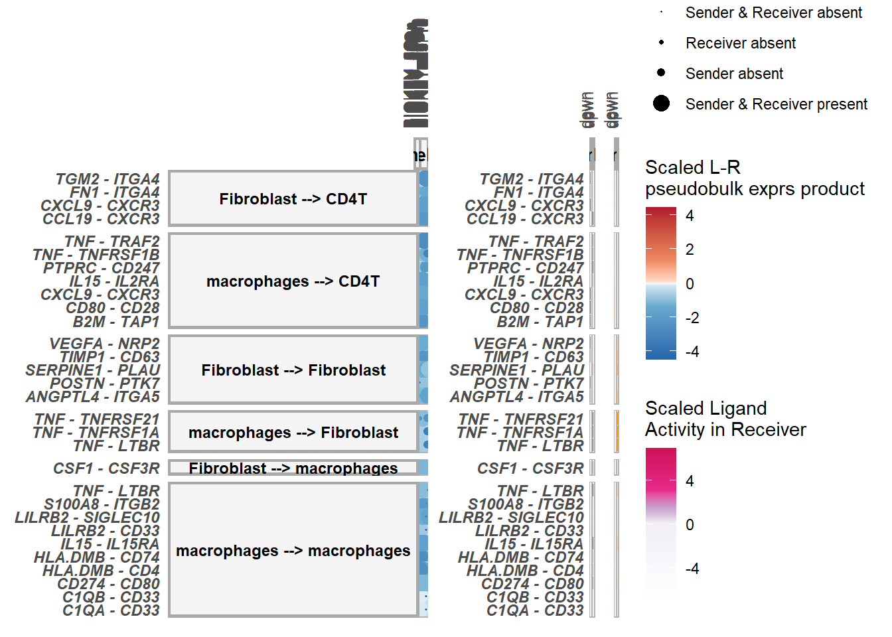
Dotplot/heatmap of top 30 interactions of which the On-vs-Pre change is stronger in group NE than the E group
plot_oi = make_sample_lr_prod_activity_plots(
multinichenet_output$prioritization_tables,
prioritized_tbl_oi_NE_30)
plot_oi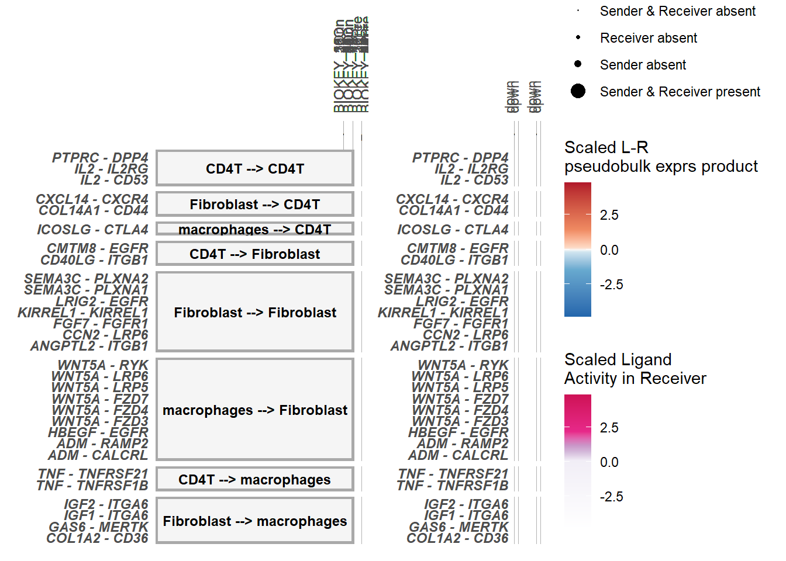
Typically, there are way more than 30 differentially expressed and active ligand-receptor pairs per group across all sender-receiver combinations. Therefore it might be useful to zoom in on specific cell types as senders/receivers. Eg macrophages as receiver
group_oi = "OnE"
prioritized_tbl_oi_top_50 = get_top_n_lr_pairs(
multinichenet_output$prioritization_tables, 50,
groups_oi = group_oi, receivers_oi = "macrophages")
plot_oi = make_sample_lr_prod_activity_plots(
multinichenet_output$prioritization_tables,
prioritized_tbl_oi_top_50)
plot_oi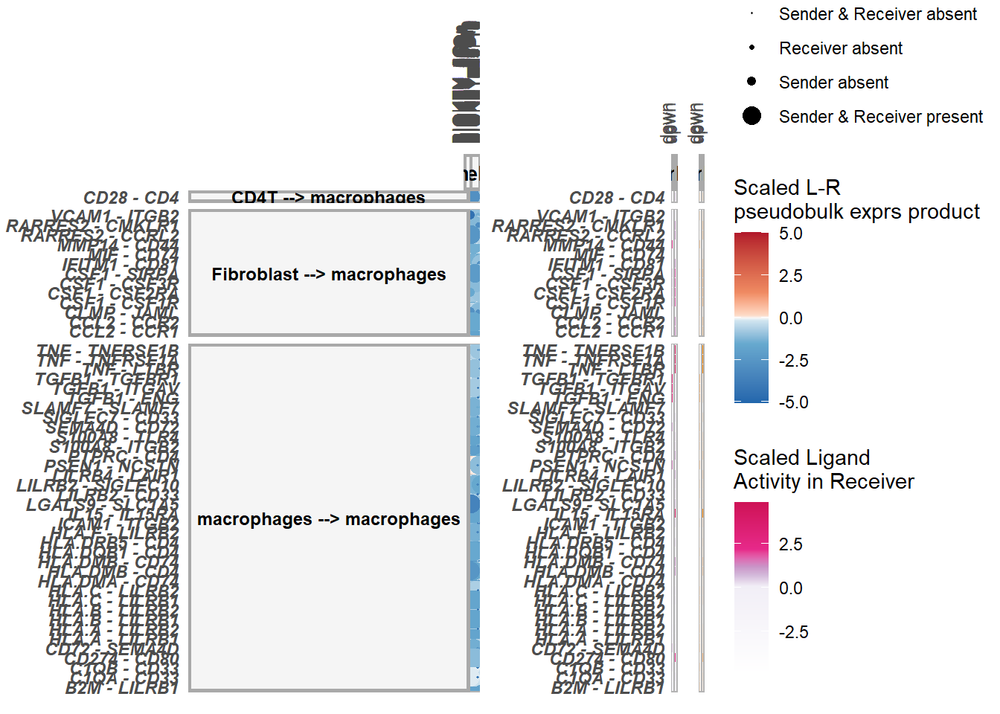
8.3 Intercellular regulatory network systems view
Generate a ‘systems’ view of the intercellular feedback and cascade processes than can be occuring between the different cell populations involved. In this plot, links are drawn between ligands of sender cell types and their ligand/receptor-annotated target genes in receiver cell types. So links are ligand-target links (= gene regulatory links) and not ligand-receptor protein-protein interactions.
prioritized_tbl_oi = get_top_n_lr_pairs(
multinichenet_output$prioritization_tables, 100, rank_per_group = FALSE)
lr_target_prior_cor_filtered = multinichenet_output$prioritization_tables$group_prioritization_tbl$group %>%
unique() %>%
lapply(function(group_oi){
lr_target_prior_cor_filtered = multinichenet_output$lr_target_prior_cor %>%
inner_join(multinichenet_output$ligand_activities_targets_DEgenes$ligand_activities %>%
distinct(ligand, target, direction_regulation, contrast)) %>%
inner_join(contrast_tbl) %>%
filter(group == group_oi)
lr_target_prior_cor_filtered_up = lr_target_prior_cor_filtered %>%
filter(direction_regulation == "up") %>%
filter( (rank_of_target < top_n_target) & (pearson > 0.50 | spearman > 0.50))
lr_target_prior_cor_filtered_down = lr_target_prior_cor_filtered %>%
filter(direction_regulation == "down") %>%
filter( (rank_of_target < top_n_target) & (pearson < -0.50 | spearman < -0.50))
lr_target_prior_cor_filtered = bind_rows(
lr_target_prior_cor_filtered_up,
lr_target_prior_cor_filtered_down)
}) %>% bind_rows()Joining with `by = join_by(receiver, ligand, target)`Warning in inner_join(., multinichenet_output$ligand_activities_targets_DEgenes$ligand_activities %>% : Detected an unexpected many-to-many relationship between `x` and `y`.
ℹ Row 47 of `x` matches multiple rows in `y`.
ℹ Row 54644 of `y` matches multiple rows in `x`.
ℹ If a many-to-many relationship is expected, set `relationship =
"many-to-many"` to silence this warning.Joining with `by = join_by(contrast)`
Joining with `by = join_by(receiver, ligand, target)`Warning in inner_join(., multinichenet_output$ligand_activities_targets_DEgenes$ligand_activities %>% : Detected an unexpected many-to-many relationship between `x` and `y`.
ℹ Row 47 of `x` matches multiple rows in `y`.
ℹ Row 54644 of `y` matches multiple rows in `x`.
ℹ If a many-to-many relationship is expected, set `relationship =
"many-to-many"` to silence this warning.Joining with `by = join_by(contrast)`make_ggraph_ligand_target_links makes a network showing the gene regulatory links between ligands from sender cell types to their induced ligands/receptors in receiver cell types. Links are only drawn if the ligand/receptor in the receiver is a potential downstream target of the ligand based on prior knowledge and sufficient correlation in expression acrosss the different samples.
colors_sender["Fibroblast"] = "pink" # the original yellow with white font is not very readable
graph_plot = make_ggraph_ligand_target_links(
lr_target_prior_cor_filtered = lr_target_prior_cor_filtered,
prioritized_tbl_oi = prioritized_tbl_oi,
colors = colors_sender)
graph_plot$plotWarning in grid.Call(C_stringMetric, as.graphicsAnnot(x$label)): font family
not found in Windows font databaseWarning in grid.Call(C_textBounds, as.graphicsAnnot(x$label), x$x, x$y, : font
family not found in Windows font databaseWarning in grid.Call(C_stringMetric, as.graphicsAnnot(x$label)): font family
not found in Windows font database
Warning in grid.Call(C_stringMetric, as.graphicsAnnot(x$label)): font family
not found in Windows font databaseWarning in grid.Call(C_textBounds, as.graphicsAnnot(x$label), x$x, x$y, : font
family not found in Windows font database
Warning in grid.Call(C_textBounds, as.graphicsAnnot(x$label), x$x, x$y, : font
family not found in Windows font databaseWarning in grid.Call.graphics(C_text, as.graphicsAnnot(x$label), x$x, x$y, :
font family not found in Windows font databaseWarning in grid.Call(C_textBounds, as.graphicsAnnot(x$label), x$x, x$y, : font
family not found in Windows font database
Warning in grid.Call(C_textBounds, as.graphicsAnnot(x$label), x$x, x$y, : font
family not found in Windows font database
Warning in grid.Call(C_textBounds, as.graphicsAnnot(x$label), x$x, x$y, : font
family not found in Windows font database
Warning in grid.Call(C_textBounds, as.graphicsAnnot(x$label), x$x, x$y, : font
family not found in Windows font database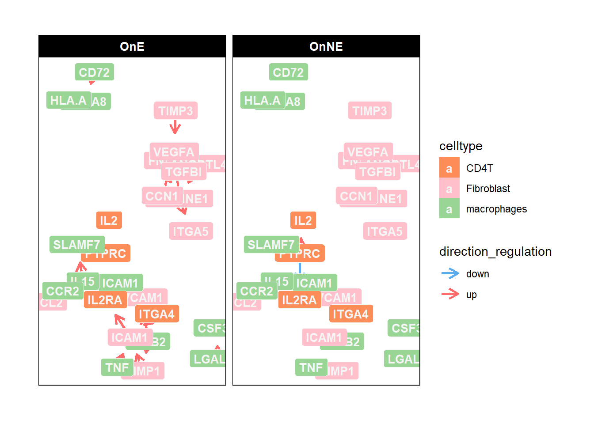
LR-target links in the systems plot
graph_plot$source_df_lt # A tibble: 31 × 6
sender receiver direction_regulation group type weight
<chr> <chr> <fct> <chr> <chr> <dbl>
1 Fibroblast_TIMP1 Fibroblast_TIMP1 up OnE Liga… 1
2 Fibroblast_FN1 Fibroblast_SERPI… up OnE Liga… 1
3 Fibroblast_FN1 Fibroblast_VEGFA up OnE Liga… 1
4 Fibroblast_TIMP3 Fibroblast_VEGFA up OnE Liga… 1
5 Fibroblast_SERPINE1 Fibroblast_SERPI… up OnE Liga… 1
6 Fibroblast_SERPINE1 Fibroblast_VEGFA up OnE Liga… 1
7 Fibroblast_CCN1 Fibroblast_SERPI… up OnE Liga… 1
8 Fibroblast_CCN1 Fibroblast_VEGFA up OnE Liga… 1
9 macrophages_ITGB2 Fibroblast_TIMP1 up OnE Liga… 1
10 Fibroblast_ANGPTL4 Fibroblast_SERPI… up OnE Liga… 1
# ℹ 21 more rowsThe arrows in the plot
graph_plot$source_df_lt %>% filter(row_number() %in% c(20,25))# A tibble: 2 × 6
sender receiver direction_regulation group type weight
<chr> <chr> <fct> <chr> <chr> <dbl>
1 Fibroblast_ICAM1 CD4T_IL2RA up OnE Ligand-Target 1
2 CD4T_PTPRC CD4T_IL2RA down OnNE Ligand-Target 1Nodes in the systems plot
graph_plot$nodes_df node celltype gene type_gene
macrophages_ITGB2 macrophages_ITGB2 macrophages ITGB2 ligand/receptor
Fibroblast_ICAM1 Fibroblast_ICAM1 Fibroblast ICAM1 ligand/receptor
Fibroblast_VCAM1 Fibroblast_VCAM1 Fibroblast VCAM1 ligand/receptor
Fibroblast_TIMP1 Fibroblast_TIMP1 Fibroblast TIMP1 ligand
Fibroblast_FN1 Fibroblast_FN1 Fibroblast FN1 ligand
Fibroblast_TIMP3 Fibroblast_TIMP3 Fibroblast TIMP3 ligand
Fibroblast_SERPINE1 Fibroblast_SERPINE1 Fibroblast SERPINE1 ligand
Fibroblast_CCN1 Fibroblast_CCN1 Fibroblast CCN1 ligand
Fibroblast_ANGPTL4 Fibroblast_ANGPTL4 Fibroblast ANGPTL4 ligand
Fibroblast_TGFBI Fibroblast_TGFBI Fibroblast TGFBI ligand
macrophages_S100A8 macrophages_S100A8 macrophages S100A8 ligand
macrophages_HLA.A macrophages_HLA.A macrophages HLA.A ligand
macrophages_CD72 macrophages_CD72 macrophages CD72 ligand
CD4T_PTPRC CD4T_PTPRC CD4T PTPRC ligand
macrophages_ICAM1 macrophages_ICAM1 macrophages ICAM1 ligand
macrophages_IL15 macrophages_IL15 macrophages IL15 ligand
macrophages_LGALS9 macrophages_LGALS9 macrophages LGALS9 ligand
Fibroblast_CCL2 Fibroblast_CCL2 Fibroblast CCL2 ligand
CD4T_ITGA4 CD4T_ITGA4 CD4T ITGA4 ligand
macrophages_TNF macrophages_TNF macrophages TNF ligand
Fibroblast_ITGA5 Fibroblast_ITGA5 Fibroblast ITGA5 receptor
CD4T_IL2RA CD4T_IL2RA CD4T IL2RA receptor
macrophages_CCR2 macrophages_CCR2 macrophages CCR2 receptor
Fibroblast_VEGFA Fibroblast_VEGFA Fibroblast VEGFA ligand
CD4T_IL2 CD4T_IL2 CD4T IL2 ligand
macrophages_CSF3R macrophages_CSF3R macrophages CSF3R receptor
macrophages_SLAMF7 macrophages_SLAMF7 macrophages SLAMF7 ligand/receptorThe graph object
graph_plot$graph# A tbl_graph: 27 nodes and 31 edges
#
# A directed multigraph with 4 components
#
# A tibble: 27 × 4
name celltype gene type_gene
<chr> <chr> <chr> <chr>
1 macrophages_ITGB2 macrophages ITGB2 ligand/receptor
2 Fibroblast_ICAM1 Fibroblast ICAM1 ligand/receptor
3 Fibroblast_VCAM1 Fibroblast VCAM1 ligand/receptor
4 Fibroblast_TIMP1 Fibroblast TIMP1 ligand
5 Fibroblast_FN1 Fibroblast FN1 ligand
6 Fibroblast_TIMP3 Fibroblast TIMP3 ligand
# ℹ 21 more rows
#
# A tibble: 31 × 6
from to direction_regulation group type weight
<int> <int> <chr> <chr> <chr> <dbl>
1 4 4 up OnE Ligand-Target 1
2 5 7 up OnE Ligand-Target 1
3 5 24 up OnE Ligand-Target 1
# ℹ 28 more rowsThe source 100 prioritized LR Links from which the systems view was generated
dim(graph_plot$source_df_lr)[1] 100 7graph_plot$source_df_lr %>% head(20)# A tibble: 20 × 7
group sender receiver celltype_ligand celltype_receptor ligand receptor
<chr> <chr> <chr> <chr> <chr> <chr> <chr>
1 OnE macrophages Fibrobla… macrophages_TNF Fibroblast_LTBR TNF LTBR
2 OnE Fibroblast CD4T Fibroblast_TGM2 CD4T_ITGA4 TGM2 ITGA4
3 OnE macrophages macropha… macrophages_TNF macrophages_LTBR TNF LTBR
4 OnE macrophages CD4T macrophages_TNF CD4T_TRAF2 TNF TRAF2
5 OnE macrophages CD4T macrophages_CX… CD4T_CXCR3 CXCL9 CXCR3
6 OnE macrophages Fibrobla… macrophages_TNF Fibroblast_TNFRS… TNF TNFRSF1A
7 OnE Fibroblast CD4T Fibroblast_CXC… CD4T_CXCR3 CXCL9 CXCR3
8 OnNE CD4T CD4T CD4T_PTPRC CD4T_DPP4 PTPRC DPP4
9 OnE Fibroblast macropha… Fibroblast_CSF1 macrophages_CSF3R CSF1 CSF3R
10 OnE macrophages CD4T macrophages_TNF CD4T_TNFRSF1B TNF TNFRSF1B
11 OnE macrophages macropha… macrophages_IL… macrophages_IL15… IL15 IL15RA
12 OnE macrophages CD4T macrophages_CD… CD4T_CD28 CD80 CD28
13 OnNE CD4T Fibrobla… CD4T_CMTM8 Fibroblast_EGFR CMTM8 EGFR
14 OnNE CD4T macropha… CD4T_TNF macrophages_TNFR… TNF TNFRSF21
15 OnE macrophages Fibrobla… macrophages_TNF Fibroblast_TNFRS… TNF TNFRSF21
16 OnE Fibroblast CD4T Fibroblast_CCL… CD4T_CXCR3 CCL19 CXCR3
17 OnE macrophages macropha… macrophages_HL… macrophages_CD74 HLA.D… CD74
18 OnE Fibroblast Fibrobla… Fibroblast_SER… Fibroblast_PLAU SERPI… PLAU
19 OnE macrophages CD4T macrophages_PT… CD4T_CD247 PTPRC CD247
20 OnE Fibroblast Fibrobla… Fibroblast_ANG… Fibroblast_ITGA5 ANGPT… ITGA5 8.4 Heatmap of ligand activities for each receiver-group combination
Plot all the ligand activities (both scaled and absolute activities) of each receiver-group combination. This gives some insights in active signaling pathways across groups. Thus, show top ligands based on ligand activity - agnostic of expression in sender, however.
ligands_oi = multinichenet_output$prioritization_tables$ligand_activities_target_de_tbl %>%
inner_join(contrast_tbl) %>%
group_by(group, receiver) %>%
distinct(ligand, receiver, group, activity) %>%
top_n(5, activity) %>%
pull(ligand) %>%
unique()Joining with `by = join_by(contrast)`ligands_oi [1] "C5" "FAM3B" "NMU" "RLN1" "ST14" "IFNA1" "IFNB1" "IFNG" "IFNL1"
[10] "IL27" "IL15" "IL4" "TNF" plot_oi = make_ligand_activity_plots(
multinichenet_output$prioritization_tables,
ligands_oi,
contrast_tbl,
widths = NULL)Joining with `by = join_by(contrast)`plot_oi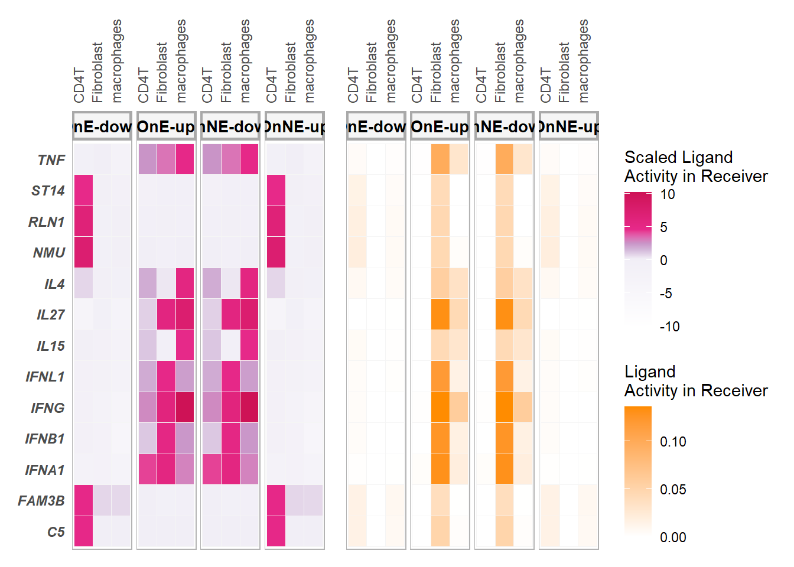
The plot shows strong interferon signature in all 3 cell types with stronger On-vs-Pre in the E vs NE group.
8.5 Violin plots for specific ligand-receptor interactions in single-cell expression data
Single-cell-based Violin plots of ligand-receptor interaction of interest: make_ligand_receptor_violin_plot -useful to zoom in on specific ligand-receptor interactions of interest by looking in more detail to their expression at the single cell level.
Recall prioritized_tbl_oi with the highest scoring links based in the general prioritization score.
prioritized_tbl_oi %>% head(10)# A tibble: 10 × 8
group sender receiver ligand receptor id prioritization_score
<chr> <chr> <chr> <chr> <chr> <chr> <dbl>
1 OnE macrophages Fibroblast TNF LTBR TNF_LTBR_… 0.944
2 OnE Fibroblast CD4T TGM2 ITGA4 TGM2_ITGA… 0.940
3 OnE macrophages macrophages TNF LTBR TNF_LTBR_… 0.939
4 OnE macrophages CD4T TNF TRAF2 TNF_TRAF2… 0.937
5 OnE macrophages CD4T CXCL9 CXCR3 CXCL9_CXC… 0.933
6 OnE macrophages Fibroblast TNF TNFRSF1A TNF_TNFRS… 0.923
7 OnE Fibroblast CD4T CXCL9 CXCR3 CXCL9_CXC… 0.921
8 OnNE CD4T CD4T PTPRC DPP4 PTPRC_DPP… 0.921
9 OnE Fibroblast macrophages CSF1 CSF3R CSF1_CSF3… 0.920
10 OnE macrophages CD4T TNF TNFRSF1B TNF_TNFRS… 0.920
# ℹ 1 more variable: prioritization_rank <dbl>Choose one of those to visualize.
ligand_oi = "CXCL9"
receptor_oi = "CXCR3"
group_oi = "OnE"
sender_oi = "macrophages"
receiver_oi = "CD4T"p_violin = make_ligand_receptor_violin_plot(sce_sender = sce, sce_receiver = sce,
ligand_oi=ligand_oi, receptor_oi = receptor_oi,
group_oi = group_oi, group_id = group_id,
sender_oi = sender_oi, receiver_oi = receiver_oi,
sample_id = sample_id,
celltype_id_sender = celltype_id,
celltype_id_receiver = celltype_id)Joining with `by = join_by(cell)`
Joining with `by = join_by(cell)`p_violin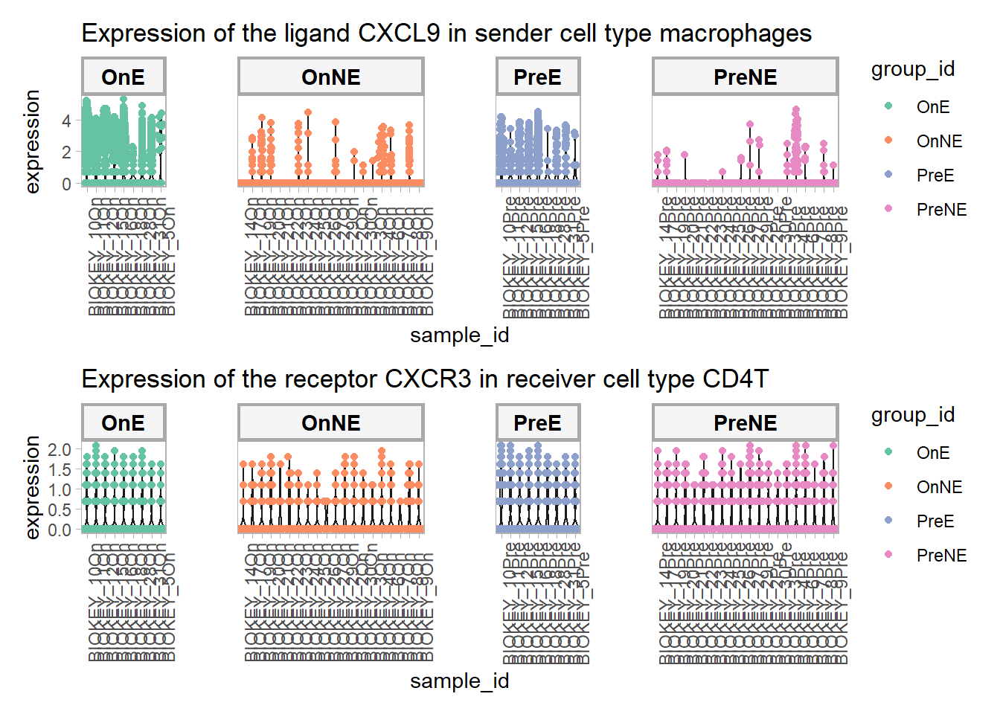
8.6 Plots of cell-cell communication changes
Plots that showcase differences in therapy-induced cell-cell communication changes, thus specific to the multifactorial design and complex contrast in this single-cell data and analysis. The plots allow visualization of ligand-receptor expression prioritized by MultiNicheNet based on expression and also ligand activity.
8.6.1 Prepare difference plots
Create a sample-level data frame which stores for each sample the following information:
which patient it came from
was it On or Pre therapy
was the patient from the E or NE group
what is the pseudobulk expression product for a ligand-receptor pair
Use top 10 interactions with stronger On-Pre differences in the E group vs the NE group.
# get prioritized interactions
prioritized_tbl_oi = get_top_n_lr_pairs(multinichenet_output$prioritization_tables, 10, rank_per_group = TRUE, groups_oi = "OnE")
# create sample-level data frame for prioritized interactions
sample_data = multinichenet_output$prioritization_tables$sample_prioritization_tbl %>% dplyr::filter(id %in% prioritized_tbl_oi$id) %>%
dplyr::mutate(sender_receiver = paste(sender, receiver, sep = " -->"),
lr_interaction = paste(ligand, receptor, sep = " - ")) %>%
dplyr::arrange(receiver) %>%
dplyr::group_by(receiver) %>%
dplyr::arrange(sender, .by_group = TRUE)
sample_data = sample_data %>%
dplyr::mutate(sender_receiver =
factor(sender_receiver,
levels = sample_data$sender_receiver %>% unique()))
# define time point and group and link all together
grouping_tbl2 = multinichenet_output$grouping_tbl %>%
dplyr::inner_join(multinichenet_output$prioritization_tables$sample_prioritization_tbl %>%
dplyr::distinct(sample, keep_receiver, keep_sender))Joining with `by = join_by(sample)`grouping_tbl2 = grouping_tbl2 %>%
dplyr::inner_join(tibble(group = c("PreE", "PreNE", "OnE", "OnNE"),
contrast = c("E", "NE", "E", "NE")))Joining with `by = join_by(group)`grouping_tbl2$on_pre = "On"
grouping_tbl2$on_pre[grouping_tbl2$group %in% c("PreE", "PreNE")] = "Pre"
sample_data = sample_data %>% ungroup() %>%
mutate(patient = sample_data$sample %>% stringr::str_split("Pre") %>%
sapply(function(x){x[1]}) %>% stringr::str_split("On") %>%
sapply(function(x){x[1]})) %>%
inner_join(grouping_tbl2)Joining with `by = join_by(sample, group, keep_receiver, keep_sender)`sample_data %>% head()# A tibble: 6 × 30
sample sender receiver ligand receptor avg_ligand avg_receptor
<chr> <chr> <chr> <chr> <chr> <dbl> <dbl>
1 BIOKEY_12On Fibroblast CD4T CXCL9 CXCR3 1.46 0.366
2 BIOKEY_4Pre Fibroblast CD4T CXCL9 CXCR3 1.07 0.465
3 BIOKEY_10On Fibroblast CD4T CXCL9 CXCR3 1.13 0.407
4 BIOKEY_15On Fibroblast CD4T CXCL9 CXCR3 1.86 0.223
5 BIOKEY_8On Fibroblast CD4T CXCL9 CXCR3 0.815 0.490
6 BIOKEY_11Pre Fibroblast CD4T CXCL9 CXCR3 0.840 0.467
# ℹ 23 more variables: ligand_receptor_prod <dbl>, fraction_ligand <dbl>,
# fraction_receptor <dbl>, ligand_receptor_fraction_prod <dbl>,
# pb_ligand <dbl>, pb_receptor <dbl>, ligand_receptor_pb_prod <dbl>,
# group <chr>, prioritization_score <dbl>, lr_interaction <chr>, id <chr>,
# scaled_LR_prod <dbl>, scaled_LR_frac <dbl>, scaled_LR_pb_prod <dbl>,
# n_cells_receiver <dbl>, keep_receiver <dbl>, n_cells_sender <dbl>,
# keep_sender <dbl>, keep_sender_receiver <fct>, sender_receiver <fct>, …Remove samples where sender and/or receiver was missing and calculate the On-vs-Pre difference in pseudobulk expression (absolute and relative, named respectively diff and lfc).
sample_data = sample_data %>% filter(keep_sender & keep_receiver) %>%
mutate(group = factor(group, levels = c("PreNE", "PreE", "OnNE", "OnE")),
on_pre = factor(on_pre, levels = c("Pre", "On")))
sample_data = sample_data %>% inner_join(
sample_data %>% filter(keep_receiver == 1 & keep_sender == 1) %>% ungroup() %>%
select(id, patient, on_pre, ligand_receptor_pb_prod) %>% distinct() %>%
tidyr::spread(on_pre, ligand_receptor_pb_prod) %>%
mutate(diff = On-Pre, fc = On/Pre) %>%
mutate(lfc = log(fc)) %>%
arrange(-lfc)
)Joining with `by = join_by(id, patient)`sample_data %>% head()# A tibble: 6 × 35
sample sender receiver ligand receptor avg_ligand avg_receptor
<chr> <chr> <chr> <chr> <chr> <dbl> <dbl>
1 BIOKEY_12On Fibroblast CD4T CXCL9 CXCR3 1.46 0.366
2 BIOKEY_4Pre Fibroblast CD4T CXCL9 CXCR3 1.07 0.465
3 BIOKEY_10On Fibroblast CD4T CXCL9 CXCR3 1.13 0.407
4 BIOKEY_15On Fibroblast CD4T CXCL9 CXCR3 1.86 0.223
5 BIOKEY_11Pre Fibroblast CD4T CXCL9 CXCR3 0.840 0.467
6 BIOKEY_10Pre Fibroblast CD4T CXCL9 CXCR3 0.521 0.750
# ℹ 28 more variables: ligand_receptor_prod <dbl>, fraction_ligand <dbl>,
# fraction_receptor <dbl>, ligand_receptor_fraction_prod <dbl>,
# pb_ligand <dbl>, pb_receptor <dbl>, ligand_receptor_pb_prod <dbl>,
# group <fct>, prioritization_score <dbl>, lr_interaction <chr>, id <chr>,
# scaled_LR_prod <dbl>, scaled_LR_frac <dbl>, scaled_LR_pb_prod <dbl>,
# n_cells_receiver <dbl>, keep_receiver <dbl>, n_cells_sender <dbl>,
# keep_sender <dbl>, keep_sender_receiver <fct>, sender_receiver <fct>, …order_patients = sample_data %>% group_by(patient) %>%
summarise(sum_diff = sum(diff, na.rm = TRUE)) %>%
arrange(-sum_diff) %>%
pull(patient)
order_patients %>% head()[1] "BIOKEY_5" "BIOKEY_11" "BIOKEY_23" "BIOKEY_6" "BIOKEY_30" "BIOKEY_12"order_patients [1] "BIOKEY_5" "BIOKEY_11" "BIOKEY_23" "BIOKEY_6" "BIOKEY_30" "BIOKEY_12"
[7] "BIOKEY_31" "BIOKEY_10" "BIOKEY_28" "BIOKEY_16" "BIOKEY_26" "BIOKEY_18"
[13] "BIOKEY_17" "BIOKEY_20" "BIOKEY_22" "BIOKEY_7" "BIOKEY_19" "BIOKEY_29"
[19] "BIOKEY_2" "BIOKEY_25" "BIOKEY_15" "BIOKEY_21" "BIOKEY_8" "BIOKEY_3"
[25] "BIOKEY_24" "BIOKEY_14" "BIOKEY_27" "BIOKEY_9" "BIOKEY_4" order_samples = sample_data %>% group_by(patient) %>%
summarise(sum_diff = sum(diff, na.rm = TRUE)) %>%
inner_join(sample_data) %>%
arrange(-sum_diff) %>%
pull(sample) %>% unique()Joining with `by = join_by(patient)`order_samples %>% head()[1] "BIOKEY_5On" "BIOKEY_5Pre" "BIOKEY_11Pre" "BIOKEY_11On" "BIOKEY_23On"
[6] "BIOKEY_23Pre"order_samples [1] "BIOKEY_5On" "BIOKEY_5Pre" "BIOKEY_11Pre" "BIOKEY_11On" "BIOKEY_23On"
[6] "BIOKEY_23Pre" "BIOKEY_6Pre" "BIOKEY_6On" "BIOKEY_30Pre" "BIOKEY_30On"
[11] "BIOKEY_12On" "BIOKEY_12Pre" "BIOKEY_31Pre" "BIOKEY_31On" "BIOKEY_10On"
[16] "BIOKEY_10Pre" "BIOKEY_28On" "BIOKEY_28Pre" "BIOKEY_16On" "BIOKEY_16Pre"
[21] "BIOKEY_26Pre" "BIOKEY_26On" "BIOKEY_18On" "BIOKEY_18Pre" "BIOKEY_17Pre"
[26] "BIOKEY_17On" "BIOKEY_20On" "BIOKEY_20Pre" "BIOKEY_22Pre" "BIOKEY_22On"
[31] "BIOKEY_7Pre" "BIOKEY_7On" "BIOKEY_19On" "BIOKEY_19Pre" "BIOKEY_29Pre"
[36] "BIOKEY_29On" "BIOKEY_2Pre" "BIOKEY_2On" "BIOKEY_25Pre" "BIOKEY_25On"
[41] "BIOKEY_15On" "BIOKEY_15Pre" "BIOKEY_21Pre" "BIOKEY_21On" "BIOKEY_8On"
[46] "BIOKEY_8Pre" "BIOKEY_3Pre" "BIOKEY_3On" "BIOKEY_24Pre" "BIOKEY_24On"
[51] "BIOKEY_14On" "BIOKEY_14Pre" "BIOKEY_27Pre" "BIOKEY_27On" "BIOKEY_9Pre"
[56] "BIOKEY_9On" "BIOKEY_4Pre" "BIOKEY_4On" 8.6.2 Boxplots
p_lr_prod_change_boxplot = sample_data %>%
mutate(patient = factor(patient, levels = order_patients)) %>%
ggplot(aes(x = contrast, y = ligand_receptor_pb_prod,
fill = on_pre, group = group)) +
geom_boxplot() +
facet_wrap(id~.) +
theme_bw() +
xlab("") + ylab("")
p_lr_prod_change_boxplot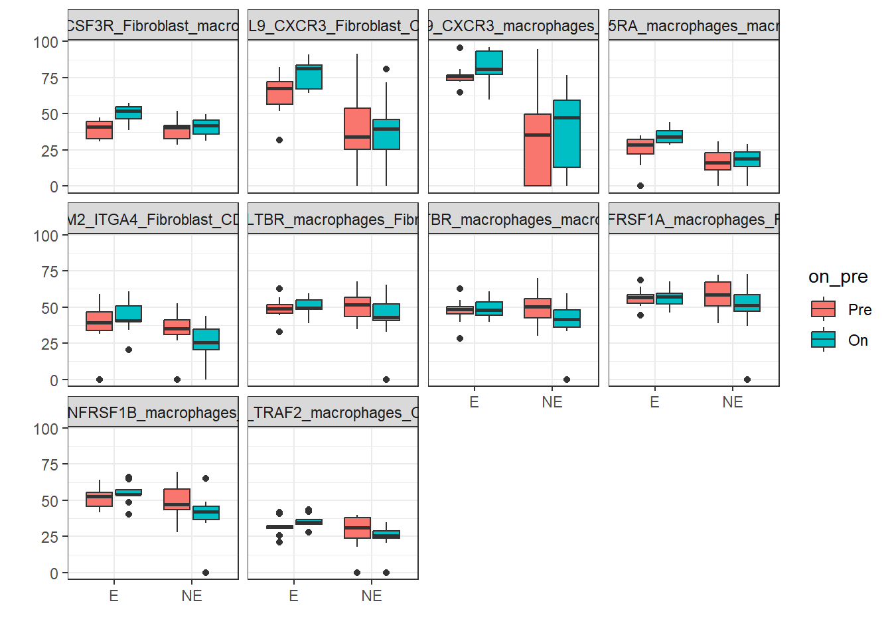
The boxplots reflect the average group differences inferred by the DE model underlying MultiNicheNet.
8.6.3 Bubble plots
Bubble plots are used to visualize and gain insights into the potential inter-sample heterogeneity (that boxplots don’t illustrate).
On-vs-Pre absolute difference in pseudobulk ligand-receptor expression product for group E
max_diff = abs(sample_data$diff) %>% max(na.rm = TRUE)
custom_scale_color = scale_color_gradientn(
colours = RColorBrewer::brewer.pal(n = 7, name = "RdBu") %>% rev(),
values = c(0, 0.30, 0.425, 0.5, 0.575, 0.70, 1),
limits = c(-1 * max_diff, max_diff))
p_lr_prod_change = sample_data %>%
mutate(patient = factor(patient, levels = order_patients)) %>%
ggplot(aes(patient, lr_interaction, color = diff)) +
geom_point(size = 5) +
facet_grid(sender_receiver~contrast,
scales = "free", space = "free", switch = "y") +
theme_light() +
theme(axis.ticks = element_blank(), axis.title = element_blank(),
axis.text.y = element_text(face = "bold.italic", size = 9),
axis.text.x = element_text(size = 9, angle = 90, hjust = 0),
panel.grid.major = element_blank(),
panel.grid.minor = element_blank(),
panel.spacing.x = unit(0.4, "lines"),
panel.spacing.y = unit(0.25, "lines"),
strip.text.x.top = element_text(size = 10,
color = "black", face = "bold", angle = 0),
strip.text.y.left = element_text(size = 9, color = "black",
face = "bold", angle = 0),
strip.background = element_rect(color = "darkgrey",
fill = "whitesmoke",
size = 1.5, linetype = "solid")) +
custom_scale_color +
xlab("") + ylab("")Warning: The `size` argument of `element_rect()` is deprecated as of ggplot2 3.4.0.
ℹ Please use the `linewidth` argument instead.p_lr_prod_change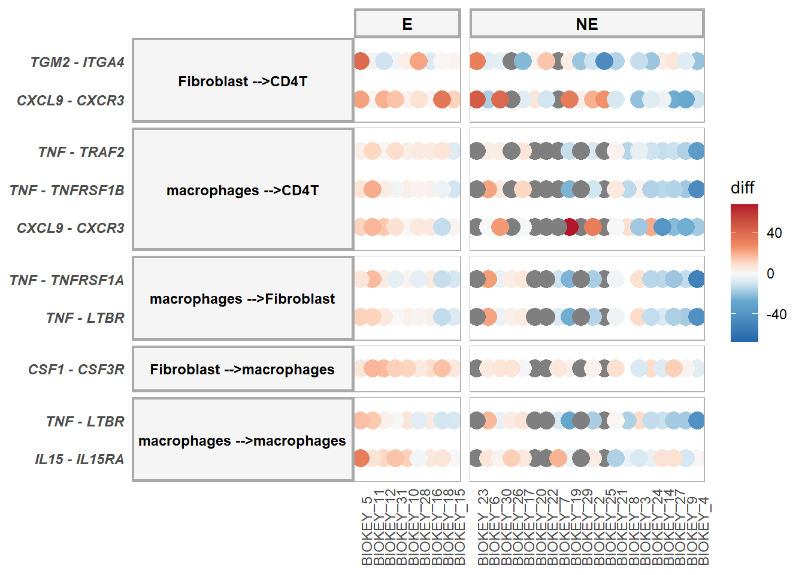